import matplotlib.pyplot as plt
import numpy as np
import seaborn as snsIntroducción al cálculo de probabilidades
Variables aleatorias, distribuciones y cuantificación de la incertidumbre
ImportantIdea central
Una vez construido el concepto formal de probabilidad sobre espacios muestrales y eventos, el siguiente paso natural consiste en trasladar esa estructura hacia cantidades numéricas de interés. Esa transición se realiza mediante las variables aleatorias, las funciones de distribución y las densidades, que permiten describir incertidumbre, cuantificar magnitudes esperadas y modelar dependencias. Este lenguaje será la base de buena parte de la estadística y del aprendizaje automático en un contexto probabilístico.
4.1 Introducción
Anteriormente construimos la noción formal de probabilidad a partir de espacios muestrales, eventos y funciones de conjunto. Sin embargo, en la práctica rara vez nos interesa trabajar directamente con resultados elementales de un experimento aleatorio. Lo habitual es que queramos asociar a cada resultado una cantidad numérica: el número obtenido al lanzar un dado, el tiempo de vida útil de un fusible, la ley de cobre de una muestra, el error de predicción de un modelo o la cantidad de aciertos de un clasificador.
Ese paso conceptual da origen al objeto central de este apunte: La variable aleatoria. Una variable aleatoria permite transformar los resultados de un experimento incierto en números reales, sobre los cuales ya podemos operar analíticamente. Gracias a esta construcción, la probabilidad deja de expresarse sólo como una medida sobre eventos abstractos y pasa a describir cómo se distribuyen cantidades observables o medibles.
A partir de aquí aparecen nuevos conceptos fundamentales. Las funciones de distribución permiten describir acumulación de probabilidad; las funciones de densidad y de masa permiten asignar probabilidad a valores o regiones; y cantidades como el valor esperado y la varianza resumen ubicación y dispersión de una variable aleatoria. Más adelante, al estudiar varias variables simultáneamente, surgirán también las distribuciones conjuntas, marginales y condicionales, que son esenciales para entender dependencia estadística, inferencia y predicción.
Todo este lenguaje es decisivo en machine learning. Muchos modelos modernos no sólo buscan predecir un valor, sino también cuantificar la incertidumbre asociada a esa predicción. Más aún, una gran parte del aprendizaje estadístico se formula en términos de distribuciones de probabilidad, funciones de verosimilitud, momentos y transformaciones de variables aleatorias. Por esta razón, el estudio de estas nociones no constituye un apéndice técnico, sino una de las bases del modelamiento probabilístico contemporáneo.
En este apunte comenzaremos por definir rigurosamente las variables aleatorias y sus funciones asociadas. Luego estudiaremos sus principales resúmenes numéricos, la construcción de distribuciones multivariables y condicionales, y cerraremos con resultados especialmente relevantes en inferencia y aprendizaje, como la fórmula de Bayes y algunas transformaciones de variables aleatorias.
4.2 Variables aleatorias
En muchos experimentos nos interesan números asociados a los resultados del experimento. Por ejemplo, \(n\) monedas se lanzan simultáneamente y preguntamos por el número de caras. Un par de dados ruedan y nos interesa la suma de los puntos conseguidos. Se lanza una flecha hacia un blanco circular y queremos saber la distancia desde el punto en que cayó con respecto al centro. Siempre que asociamos un número real a cada resultado de un experimento estamos tratando con una función cuyo dominio es el conjunto de resultados posibles y cuyo recorrido es el conjunto de los números reales en cuestión. Una función de estas características se llama variable aleatoria. Formalizaremos pues su definición a continuación.
Definición 4.1 – Variable aleatoria: Sea \(\Omega\) un espacio muestral arbitrario. Una función \(X:\Omega \longrightarrow \mathbb{R}\) es llamada variable aleatoria unidimensional. En términos más generales, una función vectorial del tipo \(\mathbf{X}:\Omega \longrightarrow \mathbb{R}^{n}\) es llamada variable aleatoria \(n\)-dimensional (o, en términos más prácticos, vector aleatorio \(n\)-dimensional).
Así pues, una variable aleatoria no es más que una función (real o vectorial) definida en un conjunto determinado. La palabra “aleatoria” tan solo se utiliza para recordar que el conjunto en cuestión es un espacio muestral \(\Omega\) (en ningún caso significa, necesariamente, que los elementos de \(\Omega\) se escojan al azar para construir la variable aleatoria respectiva).
A causa de la generalidad de la anterior definición, es posible tener distintas variables aleatorias asociadas a un mismo experimento. En cada caso particular nosotros, como experimentadores (o, a un grado ya más subjetivo, generalistas o conocedores del negocio), debemos decidir cuáles son las variables aleatorias que nos interesan. Generalmente, procuramos trabajar con las variables aleatorias cuyas funciones reflejan, con la máxima simplicidad posible, las propiedades de los resultados del experimento que son realmente esenciales. Esto no es trivial y, con frecuencia, se va haciendo más fácil con la experiencia.
En términos de notación, solemos emplear letras mayúsculas regulares para la designación de variables aleatorias unidimensionales. Por ejemplo, \(X,Y, Z\). El resultado de un experimento suele ser representado mediante letras griegas (es muy común el uso de la letra griega \(\omega\), sobretodo en textos más clásicos). De esta manera, \(X(\omega)\) representa aquel número real que, para el caso de la variable aleatoria \(X\), está asociado el resultado \(\omega\).
A continuación, vamos a ejemplificar este concepto a fin de despejar las dudas (razonables) que podamos tener al respecto.
Ejemplo 4.1: Un experimento consiste en lanzar un dado y leer el número de puntos conseguido. Si el dado no está cargado, resulta útil definir una variable aleatoria \(X\) que describa los resultados posibles de tal experimento. Es decir,
\[ X\left( \omega \right) =\omega \ \wedge\ \omega =\left\{ 1,2,3,4,5,6\right\} \tag{4.1} \]
En este caso, decimos que la variable aleatoria \(X\) es discreta, debido a que los resultados posibles del experimento son finitos (una variable aleatoria también será discreta si el espacio muestral es infinito numerable). No obstante, no es la única variable aleatoria que podríamos considerar. Si estamos interesados en saber si el número de puntos es par o impar, debemos considerar otra variable aleatoria \(Y\) que, para este caso, puede definirse como
\[ Y\left( \omega \right) =\begin{cases}0&;\ \mathrm{si} \ \omega \ \mathrm{es\ par} \\ 1&;\ \mathrm{si} \ \omega \ \mathrm{es\ impar} \end{cases} \tag{4.2} \]
Los valores 0 y 1 no son esenciales. Podría utilizarse cualquier par de números para describir los resultados de este experimento. Sin embargo, es usual que utilicemos estos valores, ya que en las ciencias computacionales, el par \(\left\{ 0,1\right\}\) suele asociar los valores “falso” y “verdadero” respectivamente a cualquier prueba lógica cuyos resultados sean esencialmente dos (que, naturalmente, sean de nuestro interés). Por consiguiente, \(Y\) es una variable aleatoria binaria. ◼︎
Ejemplo 4.2: Se lanza una flecha hacia un blanco circular. El conjunto de todos los resultados posibles es el que consta de todos los puntos \(\omega\) del blanco. Si imaginamos un sistema de coordenadas cartesianas colocado en el blanco y cuyo origen coincide con su centro, podemos asignar diversas variables aleatorias a este experimentos. Una de ellas es la variable aleatoria bidimensional que asigna al punto \(\omega\) sus coordenadas \((x,y)\). Otra es el par de coordenadas polares \((r,\theta)\) del punto \(\omega\). Como ejemplos de variables unidimensionales tenemos a aquellas que asignan a cada \(\omega\) su coordenada horizontal \(x\) o su coordenada radial \(r\), dependiendo del sistema de coordenadas empleado. Con frecuencia, en un experimento de este tipo, deseamos conocer la probabilidad de que la flecha toque en una determinada región del blanco, por ejemplo, en el primer cuadrante. Este suceso se puede describir de la manera más simple mediante la variable aleatoria que asigna a cada punto \(\omega\) su coordenada transversal \(\theta\), con lo cual \(X(\omega)=\theta\); el suceso “la flecha da en el primer cuadrante” es el conjunto de valores de \(\omega\) tales que \(0\leq X(\omega)\leq \pi/2\). Así pues, \(X\) es un ejemplo de variable aleatoria continua. ◼︎
Vamos a detenernos un poco en el tema de las notaciones. Evitaremos generar una notación engorrosa (siempre que se pueda) empleando notaciones breves para describir ciertos tipos de sucesos y sus probabilidades. Por ejemplo, si \(t\in \mathbb{R}\), el conjunto de todos los valores de \(\omega\) del espacio muestral tales que \(X(\omega)=t\) se representará brevemente poniendo \(X=t\). La probabilidad de este suceso se denota como \(P(X=t)\) en lugar de poner \(P\left( \left\{ \omega |X\left( \omega \right) =t\right\} \right)\). Los símbolos tales como \(P\left( X=a\vee X=b\right)\) y \(P(a<X\leq b)\) se definen de modo parecido. Así pues, el suceso \(X=a\vee X=b\) es la unión de los sucesos \(X=a\) y \(X=b\); el símbolo \(P\left( X=a\vee X=b\right)\) representa la probabilidad de esta unión. El suceso \(a<X\leq b\) es el conjunto de todos los puntos \(\omega\) tales que \(X(\omega)\) pertenece al intervalo semiabierto \((a,b]\), y el símbolo \(P(a<X\leq b)\) representa la probabilidad de este suceso.
4.3 Funciones de distribución
Volvamos de nuevo al problema del cálculo de probabilidades de un suceso asociado a una cierta variable aleatoria. Sea \(X\) una variable aleatoria unidimensional definida en un espacio muestral \(\Omega\), siendo \(\Omega\) un conjunto de Borel en \(\mathbb{R}^{n}\) para \(n\geq 1\). Sea \(P\) una medida de probabilidad definida en los subconjuntos de Borel de \(\Omega\). Para cada \(\omega\) de \(\Omega\), \(X(\omega)\) es un número real, y cuando \(\omega\) recorre los elementos de \(\Omega\), los números \(X(\omega)\) recorren un conjunto de números reales (el recorrido de \(X\)). Este conjunto puede ser finito, infinito numerable o infinito no numerable. Para cada número real \(t\) consideramos el siguiente subconjunto de \(\Omega\):
\[ A\left( t\right) =\left\{ \omega |X\left( \omega \right) \leq t\right\} \tag{4.3} \]
Si \(t\) es menor que todos los números del recorrido de \(X\), el conjunto \(A(t)\) será vacío. De lo contrario, \(A(t)\) será un conjunto no vacío. Suponemos que, para cada \(t\), el conjunto \(A(t)\) es un suceso (esto es, un conjunto de Borel). Conforme nuestra notación, representaremos este suceso con el símbolo \(X\leq t\).
Suponemos conocida la probabilidad \(P(X\leq t)\) para todo \(t\in \mathbb{R}\). Este conocimiento nos permitirá calcular las probabilidades de otros muchos sucesos de interés. Para lograrlo, se usan las probabilidades \(P(X\leq t)\) como base para la construcción de una nueva función \(F\), llamada función de distribución de \(X\), que se define a continuación.
Definición 4.2 – Función de distribución (caso undimensional): Sea \((\Omega, \mathcal{B}, P)\) un espacio de probabilidad y \(X:\Omega \longrightarrow \mathbb{R}\) una variable aleatoria unidimensional. La función \(F:\mathbb{R} \longrightarrow [0,1]\) definida como
\[ F\left( t\right) =P\left( X\leq t\right) \tag{4.4} \]
es llamada función de distribución acumulada de la variable aleatoria \(X\).
Es importante darse cuenta de que la función de distribución \(F\) está definida para todo \(\mathbb{R}\), aun cuando el recorrido de \(X\) puede ser sólo una porción acotada de \(\mathbb{R}\). En efecto, si todos los números \(X(\omega)\) están en un cierto intervalo finito \([a,b]\), entonces, para \(t<a\), la probabilidad \(P(X\leq t)\) es cero (ya que, para \(t<a\) el conjunto \(X\leq t\) es vacío) y para \(t\geq b\) la probabilidad \(P(X\leq t)\) es 1 (debido a que, en ese caso, el conjunto \(X\leq t\) es el espacio muestral completo). Esto significa que, para variables aleatorias \(X\) acotadas cuyo recorrido está dentro de un intervalo \([a,b]\), tenemos que \(F(t)=0\) para todo \(t<a\) y \(F(t)=1\) para todo \(t\geq b\).
Mediante el siguiente teorema, estableceremos las propiedades fundamentales de las funciones de distribución.
TipTeorema 4.1
Sea \((\Omega,\mathcal{B},P)\) un espacio de probabilidad y \(X:\Omega \longrightarrow \mathbb{R}\) una variable aleatoria. Si \(F\) es una función de distribución de \(X\), entonces se tiene que:
- (P1): \(0\leq F(t)\leq 1\) para todo \(t\).
- (P2): \(P(a<X\leq b)=F(b)-F(a)\) siempre que \(a<b\).
- (P3): \(F(a)\leq F(b)\) si \(a<b\).
Ejemplo 4.3 – Visualización del recorrido de una función de distribución: La función \(U\) definida como
\[ U\left( t\right) =\begin{cases}0&;\ \mathrm{si} \ t<0\\ t&;\ \mathrm{si} \ 0\leq t<1\\ 1&;\ \mathrm{si} \ t\geq 1\end{cases} \tag{4.5} \]
es llamada función de distribución uniforme. Se trata de una función propia de una variable aleatoria acotada que es tal que \(X(t)=t\) para \(0\leq t<1\). Podemos recurrir a la librería Matplotlib: para visualizar el rango completo de valores que esta función toma para todos los valores posibles de \(t\). En efecto, importamos dicha librería (más otras que usaremos un poco más adelante):
# Setting de parámetros por defecto para nuestras figuras.
plt.rcParams["figure.dpi"] = 90
sns.set()
plt.style.use("bmh")Y definimos la función \(U\) de manera sencilla como sigue:
# Definición de la función de distribución uniforme.
def U(t):
Y = np.zeros(t.shape)
for j in range(len(t)):
if t[j] < 1 and t[j] >= 0:
Y[j] = t[j]
elif t[j] < 0:
Y[j] = 0
else:
Y[j] = 1
return YGraficar esta función resulta sencillo. Por ejemplo, para \(-1\leq t\leq 2\), tenemos:
# Iniciamos nuestra figura.
fig, ax = plt.subplots(figsize=(9, 5))
# Definimos el arreglo de valores de t.
t = np.linspace(start=-1, stop=2, num=100)
# Y dibujamos nuestro gráfico.
ax.plot(t, U(t), color="navy", lw=3)
ax.set_xlabel(r"$t$", fontsize=12, labelpad=10)
ax.set_ylabel(r"$U(t)$", fontsize=12, labelpad=20, rotation=0)
plt.tight_layout()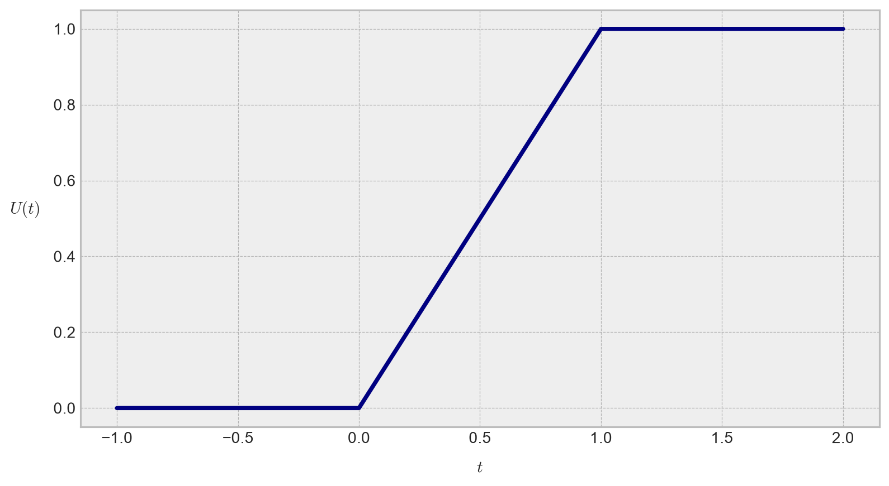
La función de distribución uniforme es un caso típico de distribución no acotada. Naturalmente, no todas las funciones de distribución son de este tipo. La función \(S\), definida como
\[ S\left( t\right) =\frac{1}{1+\exp \left( -t\right) } \tag{4.6} \]
es llamada distribución logística, y se trata de una función de distribución no acotada. Esta distribución tiene una gráfica bien conocida en el campo de la estadística y en machine learning, y cuya forma es parecida a la de la letra “S”:
# Definimos la función de distribución logística.
def S(t):
return 1 / (1 + np.exp(-t))# Iniciamos nuestra figura.
fig, ax = plt.subplots(figsize=(9, 5))
# Definimos el arreglo de valores de t.
t = np.linspace(start=-5, stop=5, num=100)
# Y dibujamos nuestro gráfico.
ax.plot(t, S(t), color="indianred", lw=3)
ax.set_xlabel(r"$t$", fontsize=12, labelpad=10)
ax.set_ylabel(r"$S(t)$", fontsize=12, labelpad=20, rotation=0)
plt.tight_layout()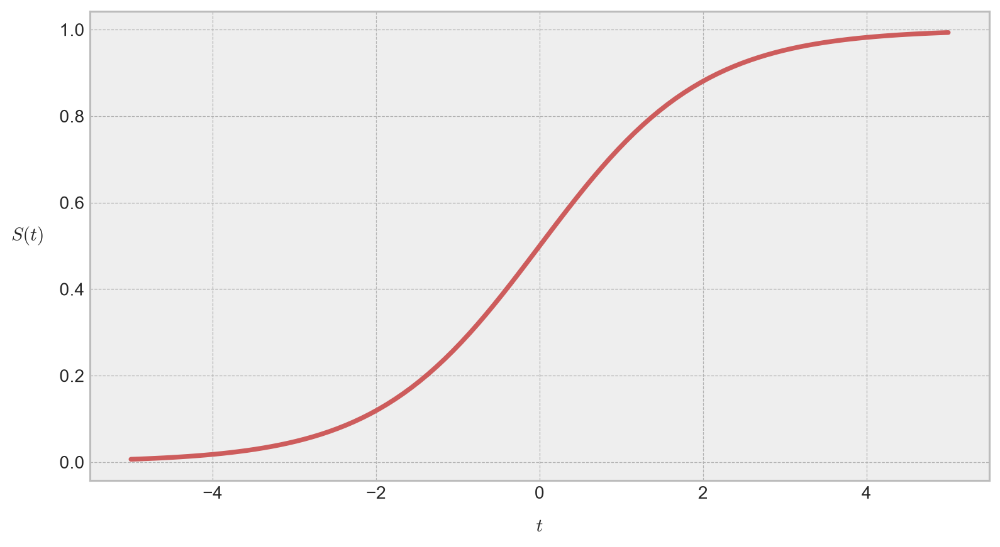
En general, resulta conveniente reconocer las propiedades geométricas de las funciones de distribución, ya que éstas permiten agruparlas en familias de distribuciones. Si bien profundizaremos más adelante en aquello, por el momento, nos conformaremos con reconocer que las variables aleatorias inherentes a estas distribuciones son ciertamente diferentes: Una variable aleatoria uniforme es evidentemente discreta, mientras que una variable aleatoria logística es de tipo continua. En un momento formalizaremos esta distinción haciendo uso, precisamente, de las distribuciones de probabilidad. ◼︎
El teorema (4.1) indica cómo calcular (en función de la correspondiente función de distribución acumulada \(F\)) la probabilidad de que una variable aleatoria \(X\) pertenezca a un intervalo semiabierto de la forma \((a,b]\). El siguiente teorema permite extender el concepto a otros tipos de intervalos.
TipTeorema 4.2
Sea \(X\) una variable aleatoria unidimensional y \(F\) una función de distribución para \(X\). Entonces, si \(a<b\), tenemos que:
- (P1): \(P\left( a\leq X\leq b\right) =F\left( b\right) -F\left( a\right) +P\left( X=a\right)\).
- (P2): \(P\left( a<X<b\right) =F\left( b\right) -F\left( a\right) -P\left( X=b\right)\).
- (P3): \(P\left( a\leq X<b\right) =F\left( b\right) -F\left( a\right) +P\left( X=a\right) -P\left( X=b\right)\).
- (P4): \(\displaystyle \lim_{t\rightarrow -\infty } F\left( t\right) =0\wedge \displaystyle \lim_{t\rightarrow +\infty } F\left( t\right) =1\).
El tipo más general de distribución es cualquier función \(F:\mathbb{R} \longrightarrow [0, 1]\) que cumpla con las siguientes propiedades:
- (T1): \(F\) es una función monótona creciente en el intervalo cerrado \([0,1]\).
- (T2): \(F\) es continua a la derecha en cada punto (es decir, pueden existir discontinuidades de salto en \(F\) siempre que sean por la izquierda).
- (T3): \(\displaystyle \lim_{t\rightarrow -\infty } F\left( t\right) =0\wedge \displaystyle \lim_{t\rightarrow +\infty } F\left( t\right) =1\).
En efecto, es posible demostrar que, para cada una de estas funciones \(F\), existe una correspondiente función de conjunto \(P\), definida sobre los conjuntos de Borel de \(\mathbb{R}\), tal que \(P\) es una medida de probabilidad que asigna el valor \(F(b)-F(a)\) a cada intervalo semiabierto \((a,b]\).
Existen dos tipos especiales de distribuciones, llamadas discretas y continuas, que en la práctica tienen particular importancia. En el caso discreto toda la masa de puntos con probabilidades no nulas está concentrada en un número de puntos finito o infinito numerable, mientras que en el caso continuo, dichas probabilidades están esparcidas, con espesor uniforme o variado, a lo largo de todo el eje real, a modo de una densidad de infinitos puntos. A continuación, trataremos con cierto detalle esos dos tipos de distribuciones.
4.3.1 Distribuciones discretas
Sea \(X\) una variable aleatoria unidimensional y consideremos una nueva función \(p\), llamada función de masa de probabilidad de \(X\) (que suele abreviarse como fmp, pmf, del inglés probability mass function). Sus valores están definidos para todo el rango de valores de \(X\), digamos \(k\in \mathbb{R}\), mediante la ecuación \(p(k)=P(X=k)\). Es decir, \(p(k)\) es la probabilidad de \(X\) tome el valor \(k\). Cuando deseamos poner de manifiesto que \(p\) está asociada a \(X\), solemos escribir \(p_{X}\) en lugar de sólo \(p\), \(p_{X}(k)\) en lugar de simplemente \(p(k)\).
El conjunto de números reales \(k\) para los cuales \(p(k)>0\) es finito o infinito numerable. Si llamamos \(T\) a dicho conjunto, podemos expresarlo como \(T=\left\{ k\in \mathbb{R} :p\left( k\right) >0\right\}\). Al respecto, diremos que la variable aleatoria \(X\) es discreta si se cumple que
\[ \sum_{k\in T} p\left( k\right) =1 \tag{4.7} \]
Dicho de otro modo, \(X\) es discreta si una unidad de masa de probabilidad está distribuida sobre el eje real concentrándose una masa positiva \(p(k)\) en cada punto \(k\) de un cierto conjunto \(T\) finito o infinito numerable y, en los restantes puntos, no hay masa. Consecuentemente, los puntos de \(T\) son llamados puntos de masa de \(X\).
Para variables aleatorias discretas, el conocimiento de la función de masa de probabilidad nos permite calcular la probabilidad de sucesos arbitrarios. Tenemos, efectivamente, el siguiente teorema.
TipTeorema 4.3
Si \(A\) es un subconjunto de Borel de \(\mathbb{R}\), y si designamos con \(P(X\in A)\) a la probabilidad de que \(X(\omega)=A\), entonces
\[ P\left( X\in A\right) =\sum_{x\in A\cap T} p\left( x\right) \tag{4.8} \]
Donde \(T\) es el conjunto de puntos de masa de \(X\).
Cuando \(A\) es el intervalo \((-\infty, k]\), la sumatoria (4.6) da el valor de la función de distribución \(F(k)\). Así pues, tenemos que
\[ F\left( k\right) =P\left( X\leq k\right) =\sum_{x\leq k} p\left( x\right) \tag{4.9} \]
Si una variable aleatoria es discreta, la función de distribución correspondiente \(F\) también es discreta.
Ejemplo 4.4 – La distribución binomial: Sea \(p\) un número real que satisface \(0\leq p\leq 1\) y sea \(q=1-p\). Supongamos que una variable aleatoria toma los valores \(0,1,2,...,n\), con \(n\in \mathbb{N}\cup \left\{ 0\right\}\), y admitamos que la probabilidad \(P(X=k)\) viene dada por la fórmula
\[ P(X=k)=\binom{n}{k} p^{k}q^{n-k}\ ;\ k\in \mathbb{N} \cup \left\{ 0\right\} \tag{4.10} \]
Esta asignación de probabilidades es legítima, porque la suma de todas ellas es
\[ \sum^{n}_{k=0} P\left( X=k\right) =\sum^{n}_{k=0} \binom{n}{k} p^{k}q^{n-k}=\left( p+q\right)^{n} =1 \tag{4.11} \]
ya que \(p+q=1\). La correspondiente función de distribución \(F(k)\) se denomina distribución binomial, de parámetros \(n\) y \(p\). Sus valores pueden calcularse mediante la siguiente expresión:
\[ F\left( k\right) =P\left( X\leq k\right) =\sum^{k}_{j=0} \binom{n}{j} p^{j}q^{n-j} \tag{4.12} \]
La distribución binomial se presenta de manera natural en el caso de una sucesión de pruebas de Bernoulli, donde \(p\) es la probabilidad del suceso. Efectivamente, cuando la variable aleatoria \(X\) cuenta el número de veces en que se presenta el suceso en \(n\) pruebas, \(P(X=k)\) es precisamente igual a \(\binom{n}{k} p^{k}q^{n-k}\) en virtud de la fórmula de Bernoulli.
Crear una variable aleatoria de este tipo es relativamente sencillo en Python, si usamos la librería Scipy. Puntualmente, estamos interesados en hacer uso del módulo scipy.stats, el cual se especializa en la realización de análisis estadísticos y numéricos de (potencialmente) gran complejidad:
from scipy import statsPara crear una variable aleatoria binomial, basta con usar la clase stats.binom(), inicializándola con el número total \(n\) de repeticiones del experimento en cuestión y la probabilidad \(p\) de obtener éxito. En los siguientes bloques de código, crearemos tres variables aleatorias binomiales para distintas combinaciones de \(n\) y \(p\), a fin de visualizar tales cambios en sus correspondientes funciones de masa y de distribución:
# Inicializamos la figura.
fig, ax = plt.subplots(figsize=(9, 9), nrows=2, sharex=True)
# Creamos el rango de valores para evaluar las funciones de masa y
# de distribución.
k = np.linspace(start=0, stop=20, num=21)
# Mediante un loop, creamos las variables aleatorias y las graficamos.
for n_j, p_j, color_j in zip(
[20, 20, 40],
[0.5, 0.7, 0.5],
["orange", "purple", "skyblue"],
):
# Creamos la variable aleatoria.
X_j = stats.binom(n_j, p_j)
# Y generamos los gráficos de sus funciones de masa y de distribución.
ax[0].scatter(
k,
X_j.pmf(k),
marker="o",
ec="gray",
color=color_j,
label=r"$n=$"+f"{n_j}, " + r"$p=$" + f"{p_j}",
)
ax[0].legend(loc="upper left", frameon=True, fontsize=12)
ax[0].set_ylabel(r"$p(k)$", fontsize=14, labelpad=20, rotation=0)
ax[1].scatter(
k,
X_j.cdf(k),
marker="o",
ec="gray",
color=color_j,
label=r"$n=$"+f"{n_j}, " + r"$p=$" + f"{p_j}",
)
ax[1].legend(loc="best", frameon=True, fontsize=12)
ax[1].set_ylabel(r"$F(k)$", fontsize=14, labelpad=20, rotation=0)
ax[0].set_title(
"Función de masa binomial",
pad=10,
fontweight="bold",
fontsize=15,
)
ax[1].set_title(
"Función de distribución binomial",
pad=10,
fontweight="bold",
fontsize=15,
)
ax[1].set_xlabel(r"$k$", fontsize=14, labelpad=10)
plt.tight_layout()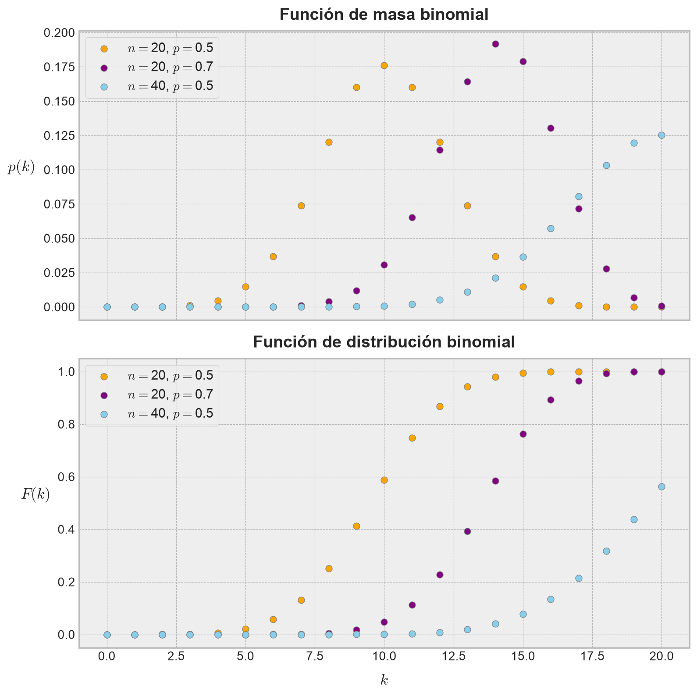
Notemos pues que estas elecciones difieren, en términos geométricos, en la forma y la localización de cada una de las curvas resultantes de unir estos puntos discretos. ◼︎
Ejemplo 4.5 – La distribución de Poisson: Sea \(\lambda >0\) y \(X\) una variable aleatoria que toma valores enteros no negativos. Si la función de masa de probabilidad asociada a \(X\) está definida como
\[ p\left( k\right) =P\left( X=k\right) =\frac{\exp \left( -\lambda \right) \lambda^{k} }{k!} \tag{4.13} \]
para \(k\in \mathbb{N} \cup \left\{ 0\right\}\), entonces decimos que \(X\) es una variable aleatoria de Poisson. La función de distribución resultante se denomina distribución de Poisson de parámetro \(\lambda\). Tal asignación de probabilidades es válida, porque
\[ \sum^{+\infty }_{k=0} p\left( k\right) =\exp \left( -\lambda \right) \sum^{+\infty }_{k=0} \frac{\lambda^{k} }{k!} =\exp \left( -\lambda \right) \exp \left( \lambda \right) =1 \tag{4.14} \]
La distribución de Poisson es popular porque modela el número de veces que ocurre un evento en un intervalo de tiempo. De esta manera, a partir de una frecuencia de ocurrencia media (o tasa de éxitos), permite modelar la probabilidad de que ocurra un determinado número de eventos durante cierto período de tiempo. Concretamente, se especializa en la probabilidad de ocurrencia de sucesos con probabilidades muy pequeñas, o sucesos “raros”. El parámetro \(\lambda>0\) representa el número de veces que se espera que ocurra dicho suceso en un intervalo dado. Por ejemplo, si es suceso estudiado tiene lugar en promedio 4 veces por minuto, y estamos interesados en la probabilidad de que ocurra \(k\) veces en un intervalo de 10 minutos, sería razonable utilizar un modelo de distribución de Poisson con \(\lambda =10\times 4=40\).
Es, por tanto, aplicable a diversos problemas relativos a sucesos aleatorios que se presentan en el transcurso del tiempo, tales como accidentes de tráfico, conexiones equivocadas en una central telefónica, e intercambios de cromosomas en las células provocados por rayos X. En minería, puntualmente en minería subterránea en ambientes de altos esfuerzos, resulta ser una elección popular para modelar la tasa de ocurrencia de eventos sísmicos de gran magnitud inducidos por la minería, los que pueden traducirse, en caso de ocurrir en zonas cercanas a niveles de producción y tener potencial de detener las operaciones de extracción, en estallidos de rocas, asignándose un número denominado peligro sísmico (o seismic hazard).
Como en el caso de la distribución binomial, visualizar una distribución de Poisson es sencillo si nos referimos al uso del módulo scipy.stats. En esta oportunidad, usamos la clase stats.poisson(), seteando el parámetro \(\lambda\) en distintos valores, a fin de observar los efectos en las funciones de masa y de distribución:
# Inicializamos la figura.
fig, ax = plt.subplots(figsize=(9, 9), nrows=2, sharex=True)
# Creamos el rango de valores para evaluar las funciones de masa y
# de distribución.
k = np.linspace(start=0, stop=20, num=21)
# Mediante un loop, creamos las variables aleatorias y las graficamos.
for lambda_j, color_j in zip(
[1, 4, 10],
["orange", "purple", "skyblue"],
):
# Creamos la variable aleatoria.
X_j = stats.poisson(lambda_j)
# Y generamos los gráficos de sus funciones de masa y de distribución.
ax[0].plot(
k,
X_j.pmf(k),
marker="o",
color="gray",
markerfacecolor=color_j,
ms=7,
label=r"$\lambda=$"+f"{lambda_j}",
)
ax[0].legend(loc="best", frameon=True, fontsize=12)
ax[0].set_ylabel(r"$p(k)$", fontsize=14, labelpad=20, rotation=0)
ax[1].plot(
k,
X_j.cdf(k),
marker="o",
color="gray",
markerfacecolor=color_j,
ms=7,
label=r"$\lambda=$"+f"{lambda_j}",
)
ax[1].legend(loc="best", frameon=True, fontsize=12)
ax[1].set_ylabel(r"$F(k)$", fontsize=14, labelpad=20, rotation=0)
ax[0].set_title(
"Función de densidad de Poisson",
pad=10,
fontweight="bold",
fontsize=15,
)
ax[1].set_title(
"Función de distribución de Poisson",
pad=10,
fontweight="bold",
fontsize=15,
)
ax[1].set_xlabel(r"$k$", fontsize=14, labelpad=10)
plt.tight_layout()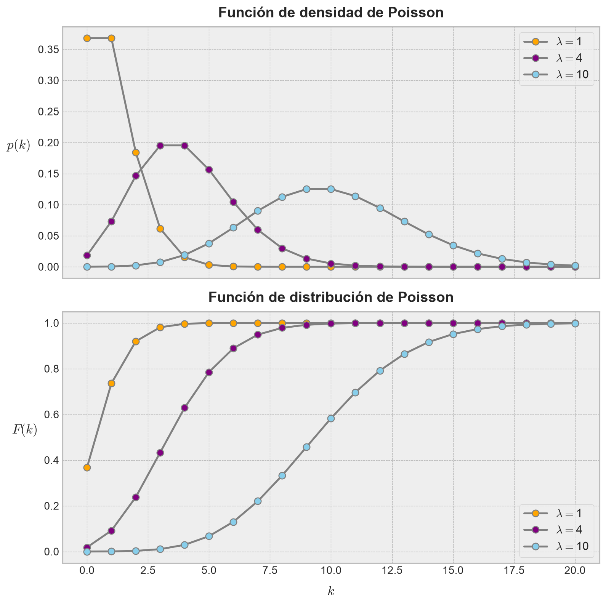
◼︎
Ejemplo 4.6: En un procesamiento de recirculación de agua industrial en una planta concentradora, se observa que el número de bombas que fallan en el tren completo, antes de 100 días de funcionamiento, es en promedio de 8. Vamos a determinar:
- La probabilidad de que una bomba falle en 25 días.
- La probabilidad de que no más de dos bombas fallen en 50 días.
- La probabilidad de que fallen al menos 10 bombas en 125 días.
En efecto, consideremos la variable aleatoria \(X\) que representa el número de bombas que fallan antes de cumplir los 100 días requeridos de funcionamiento. Dado que la tasa de fallos es fija (y baja), dicha variable puede admitirse como una variable aleatoria de Poisson con parámetro \(\lambda =8\).
Para responder la pregunta (1), vamos a suponer que existe un cierto nivel de regularidad en el proceso relativo a la falla de las bombas y, por lo tanto, la frecuencia de fallas en un cuarto de tiempo del intervalo definido de 100 días es también un cuarto de la original. De esta manera, si \(Y\) es la variable aleatoria que determina el número de bombas que falla antes de cumplir 25 días, entonces \(Y\) es una variable aleatoria de Poisson con parámetro \(\lambda =8/4=2\). Así pues, la probabilidad de que exactamente una bomba falle en 25 días puede calcularse como:
# Seteamos nuestra variable aleatoria.
Y = stats.poisson(2)
# Calculamos la probabilidad requerida (p(Y = 1)).
Y.pmf(1)np.float64(0.2706705664732254)Por lo tanto, la probabilidad de que una única bomba falle en 25 días es del 27.07%. Si seguimos el mismo razonamiento, podemos construir una nueva variable aleatoria de Poisson \(Z\) para el caso (2), donde el parámetro \(\lambda\) es igual a 4 (ya que estamos interesados en saber lo que ocurre en la mitad del tiempo definido para la variable aleatoria original \(X\)). Así:
# Seteamos nuestra variable aleatoria.
Z = stats.poisson(4)Así que debemos calcular la probabilidad \(P(Z\leq 2)\). Usando la función de distribución, obtenemos:
# Calculamos la probabilidad requerida.
Z.cdf(2)np.float64(0.2381033055535443)Por lo tanto, la probabilidad de que no más de dos bombas fallen en 50 días es de un 23.81%. Finalmente, para el caso (3), bastará con definir una nueva variable aleatoria de Poisson \(U\) con parámetro \(\lambda=10\), ya que hemos excedido los 100 días del intervalo respectivo. Considerando la propiedad que tiene toda función de distribución \(F(k)=P(X\leq k)\), para la cual \(P(X\geq k)=1-P(X<k)\), obtenemos el siguiente resultado:
# Seteamos nuestra variable aleatoria.
U = stats.poisson(10)
# Calculamos la probabilidad requerida.
1 - U.cdf(10)np.float64(0.41696024980701507)Así que la probabilidad de que fallen al menos 10 bombas en 125 días es de un 41.7%. Un valor preocupantemente alto y que ameritaría discutir ciertos planes de prevención con el área de mantenimiento. ◼︎
4.3.2 Distribuciones continuas
Sea \(X\) una variable aleatoria unidimensional y \(F\) sy función de distribución, de modo que \(F(t)=P(X\leq t)\) para todo \(t\in \mathbb{R}\). Si la probabilidad \(P(X=t)\) es cero para todo \(t\), entonces, en virtud del teorema (4.2), \(F\) es una función continua en todo \(\mathbb{R}\). En este caso, decimos que \(F\) es una distribución continua de probabilidad y \(X\) es, por extensión, una variable aleatoria continua. Si \(F\) es de clase \(C^{1}\) para todo \(t\) en el intervalo \([a,t]\), podemos hacer uso del teorema fundamental del cálculo y escribir
\[ F\left( t\right) -F\left( a\right) =\int^{t}_{a} f\left( u\right) du \tag{4.15} \]
Donde \(f\) es la derivada de \(F\). La diferencia \(F(t)-F(a)\) es, naturalmente, la probabilidad \(P(a< X\leq t)\), y la ecuación (4.15) permite expresar tal probabilidad por medio de una integral.
En algunas ocasiones la función de distribución \(F\) puede expresarse como una integral de la forma (4.15), en la que la función \(f\) es integrable pero no necesariamente continua. Siempre que una igualdad como (4.15) sea válida para todos los intervalos \([a,t]\), el integrando \(f\) se llama función de densidad de probabilidad de la variable aleatoria \(X\) (o de la distribución \(F\)) con tal que \(f\) sea no negativa. Dicho de otro modo, tenemos la siguiente definición.
Definición 4.3 – Función de densidad (caso undimensional): Sea \(X\) una variable aleatoria continua con función de distribución \(F\). Una función \(f\) no negativa se denomina función de densidad de probabilidad de \(X\) (asociada a \(F\)) si es integrable en el intervalo \([a,b]\), y si
\[ F(b)-F(a)=P(a\leq X\leq b)=\int^{b}_{a} f\left( x\right) dx \tag{4.16} \]
Si en la ecuación (4.16) hacemos que \(a\rightarrow \infty\), se tendrá que \(F(a)\rightarrow 0\), obteniéndose la importante relación:
\[ P\left( X\leq b\right) =\int^{b}_{-\infty } f\left( x\right) dx \tag{4.17} \]
y que es válida para todo \(x\in \mathbb{R}\). Si ahora hacemos que \(b\rightarrow +\infty\), entonces \(F(b)\rightarrow 1\) y, por tanto, obtenemos
\[ \int^{+\infty }_{-\infty } f\left( x\right) dx=1 \tag{4.18} \]
Para las variables aleatorias discretas, la suma de todas las probabilidades \(P(X=k)\) es igual a 1. La fórmula (4.18) es la versión de la misma propiedad adaptada a las variables aleatorias continuas. También existe una estrecha analogía entre las fórmulas (4.7) y (4.17). La función de densidad \(f\) desempeña, para las distribuciones continuas, el mismo papel de la función que la función de masa de probabilidad \(p\) para distribuciones discretas; la integración reemplaza a la suma en el cálculo de las probabilidades. Sin embargo, existe una diferencia importante. En el caso discreto, \(p(k)\) es la probabilidad de que \(X=k\), pero en el caso continuo, \(f(x)\) no es la probabilidad de que \(X=x\). En efecto, esta probabilidad es cero debido a que \(f\) es continua para todo \(x\), lo que equivale a que, para una distribución continua, tengamos que
\[ P\left( a\leq X\leq b\right) =P\left( a<X<b\right) =P\left( a<X\leq b\right) =P\left( a\leq X<b\right) \tag{4.19} \]
Si \(F\) tiene una función de densidad \(f\), cada una de las probabilidades anteriores es igual a la integral \(\int^{b}_{a} f\left( x\right) dx\). Cuando queremos poner de manifiesto que \(f\) es una función de densidad asociada a la variable aleatoria \(X\), escribimos \(f_{X}\) en lugar de \(f\).
Dado que la función de densidad \(f\) es no negativa, es posible interpretar geométricamente la ecuación (4.16) como el área bajo el gráfico de \(f\) entre las rectas \(x=a\) y \(x=b\). Para visualizar esto de manera concreta, podemos hacer uso nuevamente del módulo scipy.stats, a fin de poder visualizar la variable aleatoria \(X\) cuya función de densidad es
\[ \phi \left( x\right) =\frac{1}{\sigma \sqrt{2\pi } } \exp \left( -\frac{1}{2} \left( \frac{x-\mu }{\sigma } \right)^{2} \right) \tag{4.20} \]
La variable \(X\) es llamada variable aleatoria normal y, por extensión, \(\phi\) es llamada función de densidad normal de parámetros \(\mu\) y \(\sigma\). No entraremos en detalles aún en lo que respecta a esta función particular, salvo por el hecho de que es extremadamente importante en el campo de la estadística y del aprendizaje automatizado, y de seguro que, si somos alumnos o profesionales de la ingeniería, habremos escuchado de ella una gran cantidad de veces. Cualquiera sea el caso, es posible crear rápidamente una variable aleatoria normal en Scipy mediante el uso de la clase stats.norm():
# Creamos la variable normal en cuestión.
X = stats.norm()La variable aleatoria X creada de esta forma tiene una función de densidad \(\phi\) con parámetros \(\mu=0\) y \(\sigma=1\). Tal función se denomina función de densidad normal estándar.
Vamos a obtener el gráfico de esta función de densidad en el intervalo \([-3, 3]\), y encerraremos el área entre las rectas \(x=-1\) y \(x=1\):
# Creamos el rango de valores sobre los cuales graficaremos la función.
x = np.linspace(start=-3, stop=3, num=100)
# Obtenemos los valores de la función de densidad sobre el intervalo anterior.
phi = X.pdf(x)
# Creamos el gráfico.
fig, ax = plt.subplots(figsize=(9, 5))
ax.plot(x, phi, color="navy", label=r"$\phi(x)$", linewidth=2)
ax.axvline(x=-1, color="k", linestyle="-.", label=r"$x=-1$")
ax.axvline(x=1, color="k", linestyle="--", label=r"$x=1$"),
ax.fill_between(
x,
phi,
0,
where=(x >= -1) & (x <= 1),
color="turquoise",
alpha=0.6,
label=r"$P\ \left( -1\leq X\leq 1\right)$",
)
ax.set_xlabel(r"$x$", fontsize=14, labelpad=10)
ax.set_ylabel(r"$\phi(x)$", fontsize=14, labelpad=20, rotation=0)
ax.legend(loc="best", fontsize=11, frameon=True)
plt.tight_layout()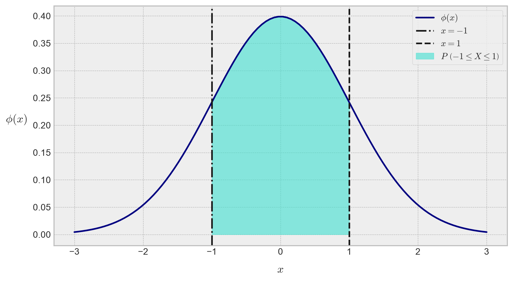
Podemos observar pues que, en el gráfico anterior, el área sombreada bajo \(\phi(x)\) representa la probabilidad \(P(-1\leq X\leq 1)\).
4.4 Valor esperado de una variable aleatoria
Vamos a dar un paso más en la caracterización de las variables aleatorias y añadiremos algunos elementos que son dependientes de sus respectivas funciones de masa o densidad (ya sea que la variable aleatoria respectiva sea discreta o continua, respectivamente). El primero de estos elementos corresponde a la esperanza matemática o valor esperado de la variable aleatoria respectiva, y que corresponde a una medida de tendencia central cuyo objetivo es, mediante un único número (o un rango de ellos), representar una distribución de probabilidad en términos de sus valores más probables. Es pues una generalización del concepto de media de un conjunto de datos discretos, y que definiremos en detalle a continuación.
Definición 4.4 – Valor esperado de una variable aleatoria discreta: Sea \((\Omega, \mathcal{B}, P)\) un espacio de probabilidad y \(X:\Omega \longrightarrow I\subseteq \mathbb{R}\) una variable aleatoria unidimensional. Si \(I\) es un conjunto finito o infinito numerable de \(\mathbb{R}\) y, por extensión, \(X\) es una variable aleatoria discreta con función de masa de probabilidad \(p(x)\) para todo \(x\in \mathbb{R}\), definiremos la esperanza o valor esperado de \(X\), denotado como \(\mathrm{E}[X]\), a la suma
\[ \mathrm{E} \left[ X\right] =\sum^{n}_{k=1} x_{k}p\left( x_{k}\right) \tag{4.21} \]
Donde \(x_{1},...,x_{n}\) son los valores que toma la variable aleatoria \(X\) en caso de que \(I\) sea un conjunto finito de puntos. Si \(I\) es infinito numerable, la fórmula para el valor esperado de \(X\) toma la forma
\[ \mathrm{E} \left[ X\right] =\sum^{+\infty}_{k=1} x_{k}p\left( x_{k}\right) \tag{4.22} \]
siendo la serie en (4.22) absolutamente convergente en todo \(\mathbb{R}\).
Ejemplo 4.7 – La esperanza de una variable aleatoria binomial: Consideremos la variable aleatoria binomial \(X\), cuya función de masa de probabilidad, como sabemos, se define como
\[ p\left( k\right) =\binom{n}{k} p^{k}\left( 1-p\right)^{n-k} \tag{4.23} \]
Aplicaremos la fórmula (4.21) para determinar el valor esperado de \(X\). En efecto, tenemos
\[ \begin{array}{lll}\mathrm{E} \left[ X\right] &=&\displaystyle \sum^{n}_{i=1} k_{i}p\left( x_{i}\right) \\ &=&\displaystyle \sum^{n}_{i=1} x_{i}\binom{n}{k_{i}} p^{k_{i}}\left( 1-p\right)^{n-k_{i}} \\ &=&np\end{array} \tag{4.24} \]
Observamos pues que la esperanza de \(X\), en el caso de que \(X\) es una variable aleatoria binomial, depende únicamente del número \(n\) de veces en el que se repite el correspondiente experimento y de la probabilidad \(p\) del resultado de dicho experimento, y no de los valores que toma \(X\). Este es un comportamiento general de la función valor esperado para toda variable aleatoria. De hecho, es común, en la literatura especializada, que las funciones de masa o de densidad de probabilidad se definan junto con sus respectivos valores esperados. Más adelante, cuando estudiemos en profundidad algunas funciones de densidad especialmente importantes en el campo del aprendizaje automátizado, haremos mención a sus correspondientes valores esperados. ◼︎
Ejemplo 4.8 – La esperanza de una variable aleatoria de Poisson: Vamos a repetir el ejercicio anterior para el caso en que \(X\) es una variable aleatoria de Poisson. Debido a que los procesos caracterizados por este tipo de variables (llamados procesos de Poisson) son de interés por cuanto las probabilidades de ocurrencia de los sucesos a estudiar son muy pequeñas, es común que los espacios muestrales involucrados sean infinitos numerables. Por lo tanto, podemos definir el valor esperado de \(X\) como sigue
\[ \mathrm{E} \left[ X\right] =\sum^{+\infty }_{i=1} x_{i}p\left( x_{i}\right) =\sum^{+\infty }_{i=1} x_{i}\frac{\exp \left( -\lambda \right) \lambda^{x_{i}} }{x_{i}!} \tag{4.25} \]
Luego, considerando la serie de Taylor de la función \(g(x)=\exp(x)\) en torno a \(x_{0}=0\), definida como \(\exp \left( x\right) =\sum^{+\infty }_{n=0} \frac{x^{n}}{n!}\), obtenemos
\[ \begin{array}{lll}\mathrm{E} \left[ X\right] &=&\displaystyle \sum^{+\infty }_{i=1} x_{i}\displaystyle \frac{\exp \left( -\lambda \right) \lambda^{x_{i}} }{x_{i}!} \\ &=&\exp \left( -\lambda \right) \displaystyle \sum^{+\infty }_{i=1} x_{i}\displaystyle \frac{\lambda^{x_{i}} }{x_{i}!} \\ &=&\lambda \exp \left( -\lambda \right) \exp \left( \lambda \right) =\lambda \end{array} \tag{4.26} \]
Por lo tanto, el valor esperado de \(X\) es simplemente igual a \(\lambda\). ◼︎
Consideremos ahora el caso en el que \(X\) es una variable aleatoria continua. Ahora \(X\) tiene asociada una función de densidad de probabilidad denotada como \(f\), definida para todo valor \(x\in \mathbb{R}\). Tenemos por tanto la siguiente definición.
Definición 4.5 – Valor esperado de una variable aleatoria continua: Sea \((\Omega, \mathcal{B}, P)\) un espacio de probabilidad y \(X:\Omega \longrightarrow I\subseteq \mathbb{R}\) una variable aleatoria unidimensional. Si \(I\) es un conjunto infinito no numerable en \(\mathbb{R}\) y, por extensión, \(X\) es una variable aleatoria continua con función de densidad de probabilidad \(f(x)\) para todo \(x\) en \(\mathbb{R}\), definimos la esperanza o valor esperado de \(X\), denotado como \(\mathrm{E}[X]\), a la integral
\[ \mathrm{E} \left[ X\right] =\int^{+\infty }_{-\infty } xf\left( x\right) dx \tag{4.27} \]
Una formulación más general y matemáticamente precisa del valor esperado requiere del uso de funciones de conjunto definidas sobre dominios que son subconjuntos de Borel y, por lo tanto, la integral en la ecuación (4.27) no es simplemente una integral de Riemann clásica (de las típicas que aprendemos en el curso de Cálculo), sino que es un caso más general conocido como integral de Lebesgue. No profundizaremos en este concepto; sin embargo, muchas funciones de densidad asociadas a distribuciones de probabilidad comunes en muchos fenómenos o procesos son seccionalmente continuas (es decir, presentan un número finito de puntos en los cuales tales funciones de densidad no son continuas). Por lo tanto, la teoría de probabilidad suele restringirse a los intervalos donde las funciones de densidad son, en efecto, continuas. En tales casos, es suficiente considerar la ecuación (4.27) para la cual la integral es simplemente la clásica integral de Riemann.
Un ejemplo de lo anterior es la función de densidad de Cauchy: Una variable aleatoria \(X\) sigue una distribución de Cauchy si su función de densidad de probabilidad es \(f(x)=(x^{2}+\pi^{2})^{-1}\). Si aplicamos la fórmula (4.27) para el caso \(a\leq X\leq b\), obtenemos
\[ \int^{b}_{a} xf\left( x\right) dx=\int^{b}_{a} \frac{x\ dx}{x^{2}+\pi^{2} } =\frac{1}{2} \ln \left( \frac{b^{2}+\pi^{2} }{a^{2}+\pi^{2} } \right) \tag{4.28} \]
El límite del lado derecho de la expresión (4.28) cuando \(a\rightarrow -\infty \wedge b\rightarrow +\infty\) no existe. Si tomamos límite tal que \(a=-b\), entonces dicho límite es cero, mientras que, si tomamos \(2a=-b\), entonces el límite respectivo es igual a \(\ln(2)\). Este tipo de funciones no tienen, por tanto, un valor esperado definido. A fin de evitar estas ambigüedades, es común añadir el requerimiento de que la integral (4.28) converja absolutamente, no estando definido el valor esperado \(\mathrm{E}[X]\) en aquellos puntos donde esta condición no se cumpla.
El valor esperado de una variable aleatoria cumple con las siguientes propiedades:
- (P1) No negatividad: Si \(X\geq 0\), entonces \(\mathrm{E}[X]\geq 0\).
- (P2) Linealidad: El operador valor esperado, denotado como \(\mathrm{E} \left[ \ \cdot \ \right]\) corresponde a una aplicación lineal. De esta manera, si \(X\) e \(Y\) son variables aleatorias arbitrarias y \(a,b\in \mathbb{R}\), entonces se tiene que \(\mathrm{E}[aX+bY]=a \mathrm{E}[X] +b \mathrm{E}[Y]\), siempre que los valores esperados individuales estén bien definidos. Por inducción, esto significa que el valor esperado de la suma de un número finito de variables aleatorias es igual a la suma de los valores esperados de cada variable aleatoria individual, y que el valor esperado escala linealmente con respecto a cualquier escalar que también escale los valores de \(X\).
- (P3) Monotonía: Si \(X\leq Y\), entonces \(\mathrm{E}[X] \leq \mathrm{E}[Y]\).
- (P4) No degeneración: Si \(\mathrm{E}[X]=0\), entonces \(X=0\).
- (P5): Si \(X=Y\), entonces \(\mathrm{E}[X]=\mathrm{E}[Y]\). En otras palabras, si \(X\) e \(Y\) son variables aleatorias que toman diferentes valores con probabilidad cero, entonces el valor esperado de \(X\) es igual al valor esperado de \(Y\).
- (P6): Si \(X=c\) para algún \(c\in \mathbb{R}\), entonces \(\mathrm{E}[X]=c\). En particular, para una variable aleatoria \(X\) con valor esperado bien definido, \(\mathrm{E} \left[ \mathrm{E} \left[ X\right] \right] =\mathrm{E} \left[ X\right]\).
- (P7) El valor esperado no es multiplicativo: En general, no es común que \(\mathrm{E}[XY]=\mathrm{E}[X] \mathrm{E}[Y]\). Esta condición sí se cumple cuando \(X\) e \(Y\) son variables aleatorias independientes.
Ejemplo 4.9: Consideremos una variable aleatoria continua \(X\) con función de densidad
\[ f\left( x\right) =\begin{cases}2\exp \left( -2x\right) &;\ \mathrm{si} \ x>0\\ 0&;\ \mathrm{si} \ x\leq 0\end{cases} \tag{4.29} \]
Vamos a determinar el valor esperado de \(X\).
En efecto, aplicando la definición de valor esperado, tenemos que
\[ \begin{array}{lll}\mathrm{E} \left[ X\right] &=\displaystyle \int^{+\infty }_{-\infty } xf\left( x\right) dx\\ &=\displaystyle \int^{+\infty }_{0} 2x\exp \left( -2x\right) dx\\ &=2\left[ x\left( \displaystyle \frac{\exp \left( -2x\right) }{-2} \right) -1\cdot \left( \displaystyle \frac{\exp \left( -2x\right) }{a} \right) \right]^{x\rightarrow +\infty }_{x=0} \\ &=\displaystyle \frac{1}{2} \end{array} \tag{4.30} \]
◼︎
4.5 Varianza de una variable aleatoria
El segundo de los elementos clave de una distribución de probabilidad, a nivel descriptivo (y de representatividad) corresponde a la varianza, la cual corresponde a una medida de dispersión, lo que significa que mide qué tan lejos se dispersan los valores de un variable aleatoria con respecto a su valor esperado. De la misma forma que éste último, resulta esencial para describir la geometría de una función de masa o densidad de probabilidad, y por lo tanto, decimos igualmente que la varianza es un valor representativo de dicha función.
Definición 4.6 – Varianza: Sea \(X\) una variable aleatoria con valor esperado \(\mathrm{E}[X]\), y que designaremos con la letra griega \(\mu\). Definimos la varianza de \(X\), denotada como \(\mathrm{Var}(X)\) (o bien, \(\sigma^{2}\)), mediante la fórmula
\[ \mathrm{Var} =\mathrm{E} \left[ \left( X-\, \mu \right)^{2} \right] \tag{4.31} \]
Es posible desarrollar la expresión definida por la ecuación (4.31) a fin de explicitar una fórmula para la varianza que dependa únicamente de \(X\). En efecto, aplicando un poco de álgebra, podemos redefinir la varianza de \(X\) como
\[ \mathrm{Var} =\mathrm{E} \left[ X^{2}\right] -\mathrm{E}^{2} \left[ X\right] \tag{4.32} \]
Donde \(\mathrm{E}^{2} \left[ X\right] =\left( E\left[ X\right] \right)^{2}\). La ecuación (4.32) permite, naturalmente, definir la varianza de \(X\) en términos de su función de masa o densidad de probabilidad, ya sea si \(X\) es una variable aleatoria discreta o continua, respectivamente. Para el caso discreto, si \(p(k)=P(X=k)\) es la correspondiente función de masa de probabilidad, se tendrá entonces que
\[ \mathrm{Var} \left( X\right) =\sum^{n}_{i=1} \left( k_{i}-\mu \right)^{2} p\left( k_{i}\right) \tag{4.33} \]
Para el caso continuo, si \(f(x)\) es la función de densidad de \(X\), se tendrá asimismo que
\[ \mathrm{Var} \left( X\right) =\int^{+\infty }_{-\infty } \left( x-\mu \right)^{2} f\left( x\right) dx \tag{4.34} \]
Ejemplo 4.10: Consideremos la variable aleatoria \(X\) cuya función de densidad de probabilidad es \(f\left( x\right) =\lambda \exp \left( -\lambda x\right)\) para \(x\geq 0\). Tal variable aleatoria se conoce como variable aleatoria exponencial y, por extensión, la función \(f\) es una función de densidad de probabilidad exponencial. Vamos a calcular el valor esperado y la varianza de \(X\).
En efecto, aplicando la definición de valor esperado, obtenemos
\[ \begin{array}{lll}\mathrm{E} \left[ X\right] &=&\displaystyle \int^{+\infty }_{0} xf\left( x\right) dx\\ &=&\displaystyle \int^{+\infty }_{0} \lambda x\exp \left( -\lambda x\right) dx\\ &=&\left[ -\displaystyle \frac{\left( \lambda x+1\right) \exp \left( -\lambda x\right) }{\lambda } \right]^{x\rightarrow +\infty }_{x=0} \\ &=&\displaystyle \frac{1}{\lambda } \end{array} \tag{4.35} \]
Vamos a aplicar la ecuación (4.32) para obtener la varianza de \(X\). Para ello, primero calculamos el valor esperado de \(X^{2}\) como sigue,
\[ \begin{array}{lll}\mathrm{E} \left[ X^{2}\right] &=&\displaystyle \int^{+\infty }_{0} \lambda x^{2}\exp \left( -\lambda x\right) dx\\ &=&\left[ -x^{2}\exp \left( -\lambda x\right) \right]^{x\rightarrow +\infty }_{x=0} +\displaystyle \int^{+\infty }_{0} 2x\exp \left( -\lambda x\right) dx\\ &=&0+\displaystyle \frac{2}{\lambda } \mathrm{E} \left[ X\right] \\ &=&\displaystyle \frac{2}{\lambda^{2} } \end{array} \tag{4.36} \]
Por lo tanto,
\[ \mathrm{Var} \left( X\right) =\mathrm{E} \left[ X^{2}\right] -\mathrm{E}^{2} \left[ X\right] =\frac{2}{\lambda^{2} } -\left( \frac{1}{\lambda } \right)^{2} =\frac{1}{\lambda^{2} } \tag{4.37} \]
◼︎
La varianza cumple con las siguientes propiedades:
- (P1): \(\mathrm{Var}(X)\geq 0\).
- (P2): \(\mathrm{Var}(a)=0\), para cualquier \(a\in \mathbb{R}\).
- (P3): \(\mathrm{Var}(aX)=a^{2} \mathrm{Var}(X)\), para cualquier \(a\in \mathbb{R}\).
- (P4): Si \(X\) e \(Y\) son variables aleatorias independientes, se tiene que \(\mathrm{Var}(X+Y)= \mathrm{Var}(X) +\mathrm{Var}(Y)\). En cualquier otro caso, \(\mathrm{Var}(X+Y)= \mathrm{Var}(X) +\mathrm{Var}(Y)+2\mathrm{E}[(X-\mathrm{E}[X])(Y-\mathrm{E}[Y])]\). La cantidad \(\mathrm{E}[(X-\mathrm{E}[X])(Y-\mathrm{E}[Y])]\) es llamada covarianza de las variables aleatorias \(X\) e \(Y\), y se denota como \(\mathrm{Cov}[X,Y]\). Nos ocuparemos de este concepto en detalle cuando extendamos los conceptos de función de densidad y de distribución a las variables aleatorias multidimensionales.
La definición de varianza establecida en la ecuación (4.32) permite establecer que \(\mathrm{E} \left[ X^{2}\right] =\int^{+\infty }_{-\infty } x^{2}f\left( x\right) dx\) para una variable aleatoria \(X\) con función de densidad \(f\). Esta es la aplicación directa de un concepto conocido en el análisis funcional como momento asociado a una función real, siendo tal función en nuestro caso más acotado, la función de densidad \(f\). En general, podemos definir el momento de orden \(n\) centrado en \(c\in \mathbb{R}\) para una función arbitraria \(f:\mathbb{R}\longrightarrow \mathbb{R}\) como
\[ \mu^{n} =\int^{+\infty }_{-\infty } \left( x-c\right)^{n} f\left( x\right) dx \tag{4.38} \]
El momento de orden \(n\) centrado en \(0\) de una función de densidad de probabilidad \(f\) de una variable aleatoria \(X\) es igual al valor esperado de \(X^{n}\) y, en la práctica, se conoce como momento crudo o simplemente momento. Por otro lado, los momentos centrados en el valor esperado de \(X\) son conocidos como momentos centrales. Así, en términos generales, podemos definir el momento de orden \(n\) de \(X\) como
\[ \mu^{n} =\mathrm{E} \left[ X^{n}\right] =\int^{+\infty }_{-\infty } x^{n}f\left( x\right) dx \tag{4.39} \]
Luego, es posible verificar, usando esta importante relación, que el valor esperado de una variable aleatoria \(X\) corresponde a su momento (centrado en \(0\)) de primer orden, mientras que su varianza corresponde a su momento central de segundo orden.
La varianza es un elemento que permite construir estandarizaciones de cualquier variable aleatoria, lo que implica que podemos expresar todos sus valores en términos de qué tanto nos alejamos de su valor esperado en las mismas unidades que las de la variable original. Para ello, si \(X\) es tal variable aleatoria, consideramos la raíz cuadrada de su varianza, llamada desviación estándar de \(X\), y que se suele denotar como
\[ \sigma =\sqrt{\mathrm{Var} \left( X\right) } \tag{4.40} \]
Si denotamos el valor esperado de \(X\) como \(\mu\), podemos, por tanto, definir el momento central normalizado de orden \(n\) de \(X\) como
\[ \mathrm{std}_{n} \left( X\right) =\frac{\mu_{n} }{\sigma^{n} } =\frac{\mathrm{E} \left[ \left( X-\mu \right)^{n} \right] }{\sigma^{n} } =\frac{\mathrm{E} \left[ \left( X-\mu \right)^{n} \right] }{\mathrm{E} \left[ \left( X-\mu \right)^{2} \right]^{n/2} } \tag{4.41} \]
Notemos que, de la expresión anterior, el primer momento central estandarizado (MCE) de \(X\) corresponde simplemente a la razón entre su valor esperado y su desviación estándar. El inverso de esta cantidad, denotado como \(\mathrm{CV}(X)=\sigma /\mu\), se conoce como coeficiente de variación asociado a \(X\). Esta fórmula expresa la desviación estándar de \(X\) como porcentaje de su valor esperado, mostrando una interpretación relativa del grado de variabilidad, independiente de la escala de la variable, a diferencia de la desviación estándar (que es sensible a la escala de los valores de \(X\)). Por otro lado, presenta ciertos problemas, ya que, a diferencia de la desviación estándar, este coeficiente es fuertemente sensible ante cambios de origen en la variable. Por ello es importante que todos los valores sean positivos y su media dé, por tanto, un valor positivo. A mayor valor del coeficiente de variación mayor heterogeneidad de los valores de la variable; y a menor coeficiente de variación, mayor homogeneidad en los valores de la variable.
Hay más momentos centrales estandarizados que son de nuestro interés. Para una variable aleatoria \(X\), el MCE de tercer orden se denomina coeficiente de asimetría de la función de densidad de probabilidad de \(X\). Como su nombre lo indica, su utilidad radica en la descripción de la geometría de la función de densidad \(f\) en términos de si sus valores más frecuentes (o más probables, incluyendo el valor esperado de la misma) están más desplazados hacia un lado u otro de la gráfica de la correspondiente función de densidad. Esto se ilustra en la Figura 4.6. Por lo tanto, si denotamos al coeficiente de asimetría como \(\gamma_{1}(X)\), tendremos que
- (T1): Si \(\gamma_{1}(X)>0\), la función de densidad \(f\) presenta un sesgo (asimetría) hacia la derecha (positivo) de los valores más probables de \(X\) (Figura 4.6 (a)).
- (T2): Si \(\gamma_{1}(X)<0\), la función de densidad \(f\) presenta un sesgo (asimetría) hacia la izquierda (negativo) de los valores más probables de \(X\) (Figura 4.6 (b)).
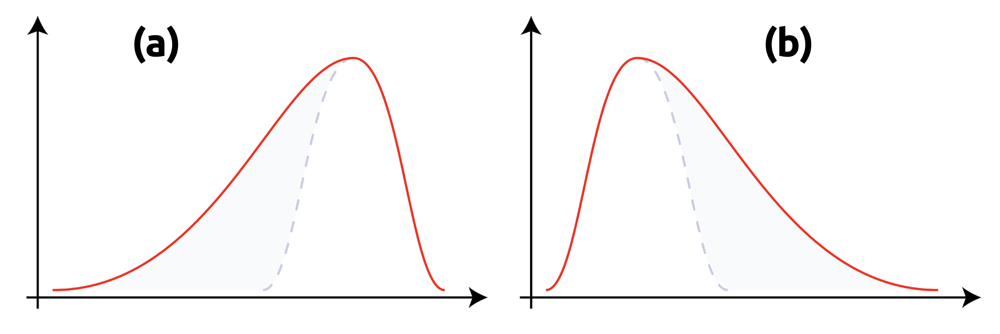
Si la función de densidad es simétrica con respecto a la media, entonces necesariamente \(\gamma_{1}(X)=0\). No obstante, el recíproco no es cierto. Suele ser común asegurar erróneamente que, si \(\gamma_{1}(X)=0\), entonces la función de densidad \(f\) asociada a \(X\) es simétrica, lo que no siempre se cumple.
Otro MCE de interés es el de cuarto orden, conocido como curtosis. Para una variable aleatoria \(X\) con función de densidad \(f\), la curtosis se denota como \(\beta_{2}(X)\) y se define como
\[ \beta_{2} \left( X\right) =\frac{\mu_{4} }{\sigma^{4} } \tag{4.42} \]
Según su concepción clásica, una curtosis de gran magnitud implica una mayor concentración de valores de la variable tanto muy cerca de la media de la distribución (peak) como muy lejos de ella (colas), al tiempo que existe una relativamente menor frecuencia de valores intermedios. Esto explica una forma de la distribución de probabilidad con colas más gruesas, con un centro más apuntado y una menor proporción de valores intermedios entre el peak y las colas.
Una mayor curtosis no implica una mayor varianza, ni viceversa. Su significado geométrico se ilustra en la Figura 4.7, donde se grafican distintas funciones de distribución con media \(0\) y varianza \(1\), y distintos coeficientes de curtosis.
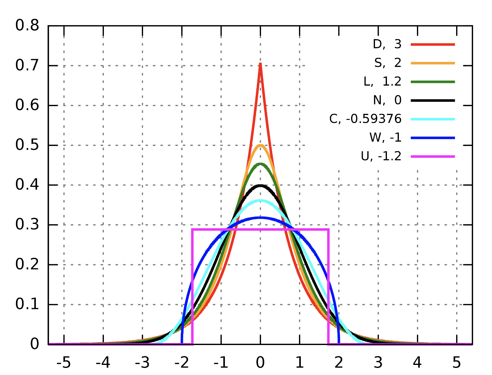
4.6 Distribuciones multivariables
Dadas dos variables aleatorias definidas en el mismo espacio de probabilidad, decimos que la distribución de probabilidad conjunta de ambas variables aleatorias (o distribución bidimensional) corresponde a la distribución de probabilidad relativa a todos los pares posibles de resultados para ambas variables aleatorias. Este es un ejemplo de función de distribución multivariable, debido a que sus valores dependen de dos variables aleatorias (no necesariamente independientes).
Ejemplo 4.11: Supongamos que dos tómbolas contienen el doble de bolitas rojas que azules (y no de otro color), y que sacamos al azar una bolita de cada una, siendo ambas elecciones independientes la una de la otra. Sean \(A\) y \(B\) variables aleatorias discretas asociadas a las elecciones resultantes en cada tómbola. La probabilidad de obtener una bolita roja es igual a \(2/3\), mientras que la de obtener una bolita azul, \(1/3\). La distribución conjunta de probabilidad se esquematiza pues en la Tabla 4.1.
| \(A=\mathrm{rojo}\) | \(A=\mathrm{azul}\) | \(P(B)\) | |
|---|---|---|---|
| \[B=\mathrm{rojo}\] | \[\displaystyle \frac{2}{3} \cdot \displaystyle \frac{2}{3} =\displaystyle \frac{4}{9}\] | \[\displaystyle \frac{1}{3} \cdot \displaystyle \frac{2}{3} =\displaystyle \frac{2}{9}\] | \[\displaystyle \frac{4}{9} +\displaystyle \frac{2}{9} =\displaystyle \frac{2}{3} \] |
| \[B=\mathrm{azul}\] | \[\displaystyle \frac{2}{3} \cdot \displaystyle \frac{1}{3} =\displaystyle \frac{2}{9}\] | \[\displaystyle \frac{1}{3} \cdot \displaystyle \frac{1}{3} =\displaystyle \frac{1}{9}\] | \[\displaystyle \frac{2}{9} +\displaystyle \frac{1}{9} =\displaystyle \frac{1}{3} \] |
| \[P(A)\] | \[\displaystyle \frac{4}{9} +\displaystyle \frac{2}{9} =\displaystyle \frac{2}{3} \] | \[\displaystyle \frac{2}{9} +\displaystyle \frac{1}{9} =\displaystyle \frac{1}{3} \] |
Cada una de las cuatro celdas interiores muestra la probabilidad de una combinación particular de resultados de estas elecciones; estas probabilidades conforman la distribución conjunta del experimento completo. En cualquier celda la probabilidad de una determinada combinación es, ya que las elecciones son independientes, igual al producto del resultado especificado por \(A\) y la probabilidad del resultado especificado por \(B\). La suma de las probabilidades en estas celdas es igual a 1, lo que es esperable para cualquier función de densidad de probabilidad (independiente de la dimensión de la variable aleatoria subyacente).
Además, la columna y fila finales nos entregan las distribuciones marginales de \(A\) y \(B\), respectivamente, las que se corresponden con la consideración única de los sucesos definidos por \(A\) y \(B\). ◼︎
Ejemplo 4.12: Consideremos otro experimento consistente en el lanzamiento de un dado no cargado, y sea \(A\) una variable aleatoria binaria que se define como \(A=1\) cuando el resultado del lanzamiento es par, y \(A=0\) cuando el resultado del lanzamiento es impar. Consideremos, además, otra variable aleatoria binaria \(B\), tal que \(B=1\) cuando el resultado del lanzamiento es un número primo, y \(B=0\) en cualquier otro caso. Los valores que toman estas variables en este experimento se tabulan, para el espacio muestral completo, en la Tabla 4.2. Entonces, la función de masa de probabilidad conjunta de \(A\) y \(B\) toma cuatro valores, los que son
\[ \begin{array}{lll}P\left( A=0,B=0\right) =P\left\{ 1\right\} =\displaystyle \frac{1}{6} &;&P\left( A=1,B=0\right) =P\left\{ 4,6\right\} =\displaystyle \frac{2}{6} \\ P\left( A=0,B=1\right) =P\left\{ 3,5\right\} =\displaystyle \frac{2}{6} &;&P\left( A=1,B=1\right) =P\left\{ 2\right\} =\displaystyle \frac{1}{6} \end{array} \tag{4.43} \]
Estas probabilidades necesariamente suman 1, ya que es el requisito esencial que hemos impuesto para cualquier función de masa de probabilidad, independiente de la dimensión de su dominio.
| 1 | 2 | 3 | 4 | 5 | 6 | |
|---|---|---|---|---|---|---|
| \(A\) | 0 | 1 | 0 | 1 | 0 | 1 |
| \(B\) | 0 | 1 | 1 | 0 | 1 | 0 |
◼︎
Los ejemplos anteriores dan sentido a la siguiente definición.
Definición 4.7 – Función de densidad conjunta de probabilidad (bivariante, caso continuo): Sean \(X_{1}\) e \(X_{2}\) variables aleatorias continuas que describen ciertos resultados de un determinado experimento aleatorio. Diremos que la función no negativa \(f:\mathbb{R}^{2} \longrightarrow \mathbb{R}\) tal que, para cualquier conjunto \(A\subset \mathbb{R}^{2}\) y que cumple con la condición
\[P \left( \mathbf{X} \in A\right) =\iint\limits_{A} f\left( x,y\right) dA \tag{4.44} \]
será llamada función de densidad conjunta de probabilidad para el vector aleatorio \(\mathbf{X}=(X_{1},X_{2})\). El recorrido de tal función, por tanto, es el conjunto \(\mathrm{Rec} \left( f\right) =\left\{ \left( x,y\right) \in \mathbb{R}^{2} :f\left( x,y\right) \geq 0\right\}\). Las variables aleatorias \(X_{1}\) y \(X_{2}\) son llamadas, por consiguiente, conjuntamente continuas en \(A\).
El concepto de función de densidad conjunta de probabilidad puede extenderse fácilmente al caso de vectories aleatorios continuos de dimensión \(n\), del tipo \(\mathbf{X}=(X_{1},...,X_{n})\). Las componentes de \(\mathbf{X}\) son conjuntamente continuas en un conjunto \(U\subset \mathbb{R}^{n}\) si existe una función \(f:\mathbb{R}^{n} \longrightarrow \mathbb{R}\) tal que
\[ P\left( \mathbf{X} \in U\right) =\int_{U} f\left( \mathbf{x} \right) dU \tag{4.45} \]
donde la integral anterior es también \(n\)-dimensional, y \(\mathbf{x}\in \mathrm{Rec}(\mathbf{X})\). La función \(F(\mathbf{x})=P(\mathbf{X}\in U)\) será llamada, por consiguiente, función de distribución conjunta del vector aleatorio \(\mathbf{X}\).
La integral definida en la ecuación (4.45) existe para todos los conjuntos \(U\) que se presenten en la práctica. SI escogemos \(U=\mathbb{R}^{n}\), entonces, por extensión (de la misma forma que ocurre para el caso de las funciones de densidad unidimensionales), se debe tener que la probabilidad \(P(\mathbf{X}\in U)\) debe ser igual a \(1\). Por lo tanto, en términos matemáticos, se tiene que
\[ \int_{\mathbb{R}^{n} } f\left( \mathbf{x} \right) d\mathbf{x} =1 \tag{4.46} \]
En particular, para el caso bivariante, la integral anterior puede expresarse como
\[ \int_{\mathbb{R}^{2} } f\left( \mathbf{x} \right) d\mathbf{x} =\int^{+\infty }_{-\infty } \int^{+\infty }_{-\infty } f\left( x,y\right) dxdy=1 \tag{4.47} \]
Como suele ocurrir en el caso unidimensional, las funciones de densidad multivariantes pueden denotarse haciendo mención a sus correspondientes variables aleatorias. De esta manera, si \(\mathbf{X}=(X,Y)\) es un vector aleatorio bidimensional con función de densidad conjunta \(f\), podemos hacer uso del símbolo \(f_{XY}\), a fin de poder distinguir dicha función de densidad conjunta de las funciones marginales de densidad \(f_{X}\) y \(f_{Y}\). Esta es una convención que es usada ampliamente en la literatura especializada, y es la que adoptaremos de ahora en adelante en estos apuntes.
Ejemplo 4.13: Sean \(X\) e \(Y\) dos variables aleatorias cuya función de densidad conjunta se define como
\[ f_{XY}\left( x,y\right) =\begin{cases}x+cy^{2}&;\ \mathrm{si} \ 0\leq x\leq 1\wedge 0\leq y\leq 1\\ 0&;\ \mathrm{en\ cualquier\ otro\ caso} \end{cases} \tag{4.48} \]
para algún \(c\in \mathbb{R}\). Vamos a determinar el valor de la constante \(c\) y la probabilidad \(P\left( 0\leq X\leq \frac{1}{2} ,0\leq Y\leq \frac{1}{2} \right)\). En efecto, usando la ecuación (4.47), obtenemos
\[ \begin{array}{lll}1&=&\displaystyle \int^{+\infty }_{-\infty } \displaystyle \int^{+\infty }_{-\infty } f_{XY}\left( x,y\right) dxdy\\ &=&\displaystyle \int^{1}_{0} \displaystyle \int^{1}_{0} \left( x+cy^{2}\right) dxdy\\ &=&\displaystyle \int^{1}_{0} \left[ \displaystyle \frac{1}{2} x^{2}+cxy^{2}\right]^{x=1}_{x=0} \\ &=&\displaystyle \int^{1}_{0} \left( \displaystyle \frac{1}{2} +cy^{2}\right) dy\\ &=&\left[ \displaystyle \frac{1}{2} y+\displaystyle \frac{1}{3} cy^{3}\right]^{y=1}_{y=0} \\ &=&\displaystyle \frac{1}{2} +\displaystyle \frac{1}{3} c\end{array} \tag{4.49} \]
Así que \(c=3/2\). Para determinar \(P\left( 0\leq X\leq \frac{1}{2} ,0\leq Y\leq \frac{1}{2} \right)\), aplicamos directamente la ecuación (4.44) para obtener
\[ \begin{array}{lll}P\left( 0\leq X\leq \displaystyle \frac{1}{2} ,0\leq Y\leq \displaystyle \frac{1}{2} \right) &=&\displaystyle \int^{\displaystyle \frac{1}{2} }_{0} \displaystyle \int^{\displaystyle \frac{1}{2} }_{0} \left( x+\displaystyle \frac{3}{2} y\right) dxdy\\ &=&\displaystyle \int^{\displaystyle \frac{1}{2} }_{0} \left[ \displaystyle \frac{1}{2} x^{2}+\displaystyle \frac{3}{2} xy^{2}\right]^{x=\displaystyle \frac{1}{2} }_{x=0} dy\\ &=&\displaystyle \int^{\displaystyle \frac{1}{2} }_{0} \left( \displaystyle \frac{1}{8} +\displaystyle \frac{3}{4} y^{2}\right) dy=\displaystyle \frac{3}{32} \end{array} \tag{4.50} \]
◼︎
Si se define más de una variable aleatoria en un experimento, agrupadas todas en un vector aleatorio \(\mathbf{X}=(X_{1},...,X_{n})\), es importante distinguir entre la función de densidad conjunta de probabilidad y las funciones de densidad para cada una de las \(n\) variables aleatorias individuales \(X_{1},...,X_{n}\). Estas últimas son llamadas funciones marginales de densidad para cada \(X_{k}\), \(k=1,...,n\).
Tiene sentido, por tanto, la siguiente definición.
Definición 4.8 – Función de densidad marginal: Sea \(\mathbf{X}\) un vector aleatorio compuesto por las variables aleatorias \(X_{1},...,X_{n}\) y sea \(f_{\mathbf{X}}\) la función de densidad conjunta de probabilidad asociada a \(\mathbf{X}\). Se define la función de densidad marginal de la variable aleatoria \(X_{k}\), para \(1\leq k\leq n\), como
\[ f_{X_{k}}\left( x_{k}\right) =\int^{+\infty }_{-\infty } f_{\mathbf{X} }\left( \mathbf{x} \right) dx_{k}\ ;\ \forall x_{k}\in \mathbb{R} \tag{4.51} \]
Donde \(x_{k}\in \mathrm{Rec}(X_{k})\) corresponde a cualquier resultado asociado a la variable aleatoria \(X_{k}\). Por tanto, la función de densidad marginal de cualquier variable aleatoria \(X_{k}\) asociada al vector \(\mathbf{X}=(X_{1},...,X_{n})\) puede calcularse a partir de la función de densidad conjunta \(f_{\mathbf{X}}\), simplemente integrando dicha función únicamente con respecto a la variable \(x_{k}\) correspondiente con el recorrido de \(X_{k}\), tratando a las demás variables como constantes.
Notemos que el concepto de función de densidad conjunta de probabilidad es fácilmente extensible a las variables aleatorias discretas. Si \(\mathbf{X}=(X_{1},...,X_{n})\) es un vector aleatorio compuesto por las variables aleatorias discretas \(X_{1},...,X_{n}\), definimos la función de masa conjunta de probabilidad de \(\mathbf{X}\) como
\[ p_{\mathbf{X} }\left( \mathbf{x} \right) =P\left( X_{1}=x_{1}\wedge \cdots \wedge X_{n}=x_{n}\right) \tag{4.52} \]
O bien, escrita en términos de probabilidades condicionales,
\[ p_{\mathbf{X} }\left( \mathbf{x} \right) =P\left( X_{1}=x_{1}\right) P\left( X_{2}=x_{2}|X_{1}=x_{1}\right) P\left( X_{3}=x_{3}|X_{1}=x_{1},X_{2}=x_{2}\right) \cdots P\left( X_{n}=x_{n}|X_{1}=x_{1},...,X_{n-1}=x_{n-1}\right) \tag{4.53} \]
La fórmula anterior es una extensión a variables aleatorias discretas de la regla del producto. Profundizaremos en esto un poco más adelante. Primero, ejercitaremos un poco los conceptos recientemente definidos.
Ejemplo 4.14: Supongamos que las variables aleatorias \(X\) e \(Y\) tienen una función de densidad conjunta de probabilidad definida como
\[ f_{XY}\left( x,y\right) =\begin{cases}c\left( 2xy+y\right) &;\ \mathrm{si} \ 2<x<6\wedge 0<y<5\\ 0&;\ \mathrm{en\ cualquier\ otro\ caso} \end{cases} \tag{4.54} \]
- (a) Determinaremos la constante \(c\).
- (b) Determinaremos las funciones de densidad y de distribución marginales para \(X\) e \(Y\).
- (c) Determinaremos las probabilidades \(P(3<X<4,Y>2)\) y \(P(X>3)\).
- (d) Determinaremos la función de distribución conjunta \(F_{XY}\).
- (e) Determinaremos si las variables aleatorias \(X\) e \(Y\) son independientes.
En efecto, para el caso de (a), notemos que la función de densidad conjunta debe cumplir con la condición de tener un volumen igual a \(1\) bajo la superficie descrita por la gráfica de \(f(x,y)=c(2x+y)\). De esta manera, tenemos que
\[ \begin{array}{lll}1&=&\displaystyle \iint_{\mathbb{R}^{2} } f_{XY}\left( x,y\right) dxdy=\displaystyle \int^{6}_{2} \displaystyle \int^{5}_{0} c\left( 2x+y\right) dxdy\\ &=&\displaystyle \int^{6}_{2} c\left[ 2xy+\frac{y^{2}}{2} \right]^{y=5}_{y=0} dx\\ &=&\displaystyle \int^{6}_{2} c\left( 10x+\frac{25}{2} \right) dx=210c\end{array} \tag{4.55} \]
Por lo tanto, \(c=1/210\). Por otro lado, la función de distribución marginal para \(X\) se define como
\[ \begin{array}{lll}F_{X}\left( x\right) =P\left( X\leq x\right) &=&\displaystyle \int^{x}_{-\infty } \displaystyle \int^{+\infty }_{-\infty } f\left( s,t\right) dsdt\\ &=&\displaystyle \begin{cases}\displaystyle \int^{x}_{-\infty } \displaystyle \int^{+\infty }_{-\infty } 0\ dsdt&;\ \mathrm{si} \ x<2\\ \displaystyle \int^{x}_{2} \displaystyle \int^{5}_{0} \left( \frac{2s+t}{210} \right) dsdt=\frac{2x^{2}+5x-18}{84} &;\ \mathrm{si} \ 2\leq x<6\\ \displaystyle \int^{6}_{2} \displaystyle \int^{5}_{0} \left( \frac{2s+t}{210} \right) dsdt=1&;\ \mathrm{si} \ x\geq 6\end{cases} \end{array} \tag{4.56} \]
El cálculo de la función de distribución marginal \(F_{X}\) se realiza conforme la separación de la función de densidad conjunta en ramas, considerando los mismos sub-dominios de \(f_{XY}\).
Luego, repitiendo este procedimiento para el caso de la función de distribución marginal \(F_{Y}\), obtenemos
\[ \begin{array}{lll}F_{Y}\left( y\right) =P\left( Y\leq y\right) &=&\displaystyle \int^{+\infty }_{-\infty } \displaystyle \int^{y}_{-\infty } f\left( s,t\right) dsdt\\ &=&\begin{cases}\displaystyle \int^{+\infty }_{-\infty } \displaystyle \int^{y}_{-\infty } 0\ dsdt&;\ \mathrm{si} \ y<0\\ \displaystyle \int^{6}_{2} \displaystyle \int^{y}_{0} \left( \frac{2s+t}{210} \right) dsdt=\frac{y^{2}+16y}{105} &;\ \mathrm{si} \ 0\leq y<5\\ \displaystyle \int^{6}_{2} \displaystyle \int^{5}_{0} \left( \frac{2s+t}{210} \right) dsdt=1&;\ \mathrm{si} \ y\geq 5\end{cases} \end{array} \tag{4.57} \]
Notemos que, considerando la ecuación (4.16), es posible calcular la función de densidad de probabilidad de cualquier variable aleatoria mediante la aplicación del teorema fundamental del cálculo. Es decir, \(f_{X}\left( x\right) =dF_{X}\left( x\right) /dx\). De esta manera,
\[ f_{X}\left( x\right) =\frac{dF_{X}\left( x\right) }{dx} =\begin{cases}\displaystyle \frac{4x+5}{84} &;\ \mathrm{si} \ 2<x<6\\ 0&;\ \mathrm{en\ otro\ caso} \end{cases} \tag{4.58} \]
Repitiendo este procedimiento para el caso de la función de densidad \(f_{Y}\), obtenemos
\[ f_{Y}\left( y\right) =\frac{dF_{Y}\left( y\right) }{dy} =\begin{cases}\displaystyle \frac{2y+16}{105} &;\ \mathrm{si} \ 0<y<5\\ 0&;\ \mathrm{en\ otro\ caso} \end{cases} \tag{4.59} \]
Lo que resuelve (b). Para resolver (c), aplicamos directamente las funciones previamente calculadas. De este modo,
\[ \begin{array}{rcl}P\left( 3<X<4,Y>2\right) &=&\displaystyle \frac{1}{210} \displaystyle \int^{4}_{3} \int^{5}_{2} \left( 2x+y\right) dxdy=\displaystyle \frac{3}{20} \\ P\left( X>3\right) &=&\displaystyle \frac{1}{210} \displaystyle \int^{6}_{3} \int^{5}_{0} \left( 2x+y\right) dxdy=\frac{23}{28} \end{array} \tag{4.60} \]
Para resolver (d), recordemos que, por definición, la función de distribución conjunta \(F_{XY}\) puede calcularse como
\[ F_{XY}\left( x,y\right) =P\left( X\leq x,Y\leq y\right) =\int^{x}_{-\infty } \int^{y}_{-\infty } f_{XY}\left( s,t\right) dsdt \tag{4.61} \]
La región de integración corresponde a la intersección del rectángulo abierto \(\mathcal{R} =\left\{ \left( x,y\right) \in \mathbb{R}^{2} :2<x<6,0<y<5\right\}\) con la región no acotada \(\mathcal{S} =\left\{ \left( s,t\right) \in \mathbb{R}^{2} :s\leq x,t\leq y\right\}\) en el plano \((s,t)\). En la Figura 4.8 se ilustran los distintos valores que toma la distribución conjunta \(F_{XY}\), dependiendo de si estamos fuera de \(\mathcal{R}\) o no, conforme la integral (4.61).
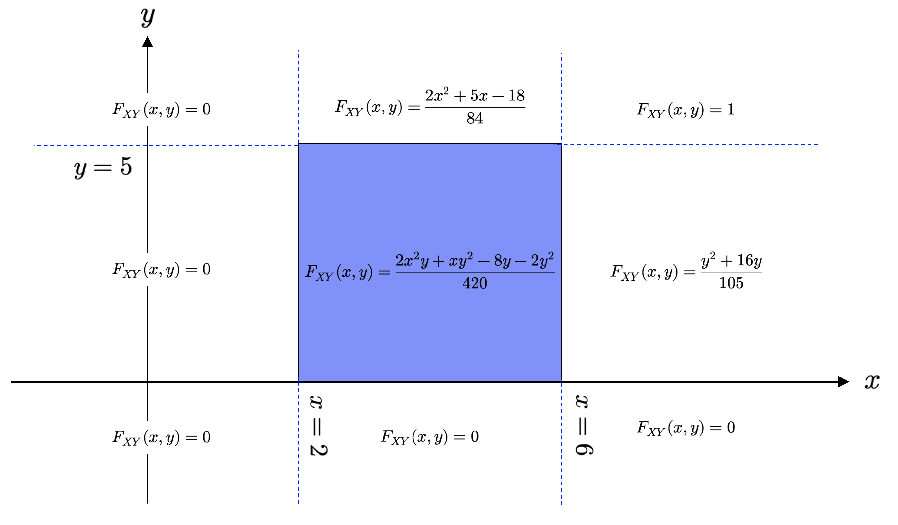
Finalmente, para demostrar la independencia de las variables aleatorias \(X\) e \(Y\), basta con verificar si el producto de sus funciones marginales de densidad es igual al de su función de densidad conjunta para todo \((x,y)\in \mathbb{R}^{2}\). De este modo,
\[ \begin{array}{lll}f_{X}\left( x\right) f_{Y}\left( y\right) &=&\displaystyle \frac{1}{84} \cdot \frac{1}{105} \left( 4x+5\right) \left( 2y+16\right) \\ &=&\displaystyle \frac{1}{8820} \left( 8xy+64x+10y+80\right) \\ &=&\displaystyle \frac{4xy+32x+5y+40}{4410} \\ &\neq &f_{XY}\left( x,y\right) \end{array} \tag{4.62} \]
Luego, como \(f_{X}(x)f_{Y}(y)\neq f_{XY}(x,y)\), entonces las variables aleatorias \(X\) e \(Y\) no son independientes. ◼︎
4.7 Distribuciones condicionales
Durante prácticamente la totalidad de esta sección, hemos considerado que la teoría de la probabilidad es simplemente una aplicación de la teoría de funciones de conjunto y, por extensión, una forma lógica, a nivel matemático, de formular cuestiones de incertidumbre en problemas determinados. Después de haber introducido la definición de probabilidad, hemos aplicado el cálculo integral para definir los conceptos de función de densidad y función de distribución. Las únicas reglas fundamentales que restringen la aplicación de estos conceptos corresponden a las reglas de la suma y el producto.
Recordemos que \(F_{XY}(x,y)\) denota la función de distribución conjunta de probabilidad para las variables aleatorias \(X\) e \(Y\), mientras que las distribuciones \(F_{X}(x)\) y \(F_{Y}(y)\) son, correspondientemente, las distribuciones marginales de \(X\) e \(Y\). Queremos ahora construir la función de distribución condicional de probabilidad \(F_{X|Y}(x,y)\), la cual nos permite calcular la probabilidad de ocurrencia de un resultado descrito por \(X\), dada la ocurrencia de un conjunto determinado de resultados descritos por \(Y\). Para ello, necesitamos primero definir la respectiva función condicional de densidad para los casos en los cuales \(X\) e \(Y\) son variables aleatorias discretas o continuas. Tiene sentido, por tanto, la siguiente definición.
Definición 4.9 – Función condicional de masa de probabilidad (caso bivariante): Sean \(X\) e \(Y\) dos variables aleatorias discretas con función de masa conjunta \(p_{XY}(x,y)\). Diremos que la función condicional de masa de probabilidad de \(X\), dado que \(Y=y\), denotada como \(p_{X|Y}(x,y)\), se define como
\[ p_{X|Y}\left( x,y\right) =\frac{P\left( \left\{ X=x\right\} \cap \left\{ Y=y\right\} \right) }{P\left( Y=y\right) } =\frac{p_{XY}\left( x,y\right) }{p_{Y}\left( y\right) } \ ;\ \mathrm{siempre\ que} \ p_{Y}\left( y\right) \neq 0 \tag{4.63} \]
Donde \(p_{Y}(y)\) es la función de masa marginal de \(Y\).
Similarmente, la función condicional de masa de probabilidad de \(Y\), dado que \(X=x\), y denotada como \(p_{Y|X}(x,y)\), está dada por la fórmula
\[ p_{Y|X}\left( x,y\right) =\frac{P\left( \left\{ Y=y\right\} \cap \left\{ X=x\right\} \right) }{P\left( X=x\right) } =\frac{p_{XY}\left( x,y\right) }{p_{X}\left( x\right) } \ ;\ \mathrm{siempre\ que} \ p_{X}\left( x\right) \neq 0 \tag{4.64} \]
Donde \(p_{X}(x)\) es la función de masa marginal de \(X\).
Ejemplo 4.15: Supongamos que estamos interesados en la relación que existe entre el color de pelo de una persona y su color de ojos. Basados en una muestra aleatoria proveniente de algunos estudiantes de la Universidad de Santiago de Chile, se ha construido la Tabla 4.3, que detalla los valores que toma la función de masa conjunta y marginales para las variables aleatorias \(X\) e \(Y\), y que describen los resultados de este experimento, digamos, \(X=\mathrm{color\ de\ pelo}\), e \(Y=\mathrm{color\ de\ ojos}\).
| Valor de \(p_{XY}(x,y)\) | Color de pelo | ||||
|---|---|---|---|---|---|
| Color de ojos (\(Y\)) | Rubio (1) | Colorín (2) | Café (3) | Negro (4) | Valor de \(p_{Y}(y)\) |
| Azul (1) | 0.12 | 0.05 | 0.12 | 0.01 | 0.30 |
| Verde (2) | 0.12 | 0.07 | 0.09 | 0.00 | 0.28 |
| Café (3) | 0.16 | 0.07 | 0.16 | 0.03 | 0.42 |
| Valor de \(p_{X}(x)\) | 0.40 | 0.19 | 0.37 | 0.04 | 1.00 |
Las probabilidades remarcadas en lila en la última fila y columna, respectivamente, corresponden a los resultados relativos a las funciones de masa marginales de \(X\) e \(Y\), mientras que las probabilidades en las celdas interiores corresponden a los resultados que toma la función conjunta de masa \(p_{XY}(x,y)\) para los pares \((X,Y)\). Por ejemplo, \(p_{XY}(X=3,Y=2)=0.09\) indica que la probabilidad conjunta de que un estudiante de la USACH, elegido al azar, tenga cabello de color café (\(X=3\)) y ojos verdes (\(Y=2\)) es de un 9%. \(p_{X}(X=3)=0.37\) indica que la probabilidad (marginal) de que un estudiante de la USACH, elegido al azar, tenga cabello de color café es de un 37%, y así sucesivamente.
Dada esta tabla de probabilidades, podemos calcular los valores de la función condicional de masa relativa a la dependencia de \(X\) o de \(Y\). Por ejemplo, si queremos calcular \(p_{X|Y}(X=2|Y=1)\), tendremos
\[ p_{X|Y}\left( X=2|Y=1\right) =\frac{p_{XY}\left( X=2,Y=1\right) }{p_{Y}\left( Y=1\right) } =\frac{0.05}{0.3} =\frac{5}{100} \cdot \frac{10}{3} =\frac{1}{6} \tag{4.65} \]
Notemos que el resultado anterior nos indica la probabilidad de que un individuo de la sub-población de individuos con ojos azules tenga cabello colorín. Específicamente, encontramos que 1/6 (aproximadamente, el 16.7%) de los estudiantes presentan esta combinación de características.
Ahora revirtamos el orden de \(X\) y de \(Y\) y calculemos \(p_{Y|X}(Y=2|X=1)\),
\[ p_{Y|X}\left( Y=2|X=1\right) =\frac{p_{XY}\left( X=1,Y=2\right) }{p_{X}\left( X=1\right) } =\frac{0.12}{0.4} =\frac{12}{100} \cdot \frac{100}{4} =\frac{3}{10} \tag{4.66} \]
Ahora la sub-población es de individuos con cabello rubio; por lo tanto, hemos determinado que la probabilidad de que un individuo en esta sub-población tenga ojos verdes, la que corresponde a 3/10; es decir, un 30%. ◼︎
Las funciones condicionales de masa cumplen con varias propiedades heredadas de las funciones de masa comunes, y que mencionamos a continuación.
- (P1): La función condicional de masa de probabilidad está acotada: \(0\leq p_{X|Y}\left( x,y\right) \leq 1\wedge 0\leq p_{Y|X}\left( x,y\right) \leq 1\).
- (P2): La función condicional de masa siempre tiene una suma igual a 1: \(\sum_{k} p_{X|Y}\left( x_{k},y\right) =1\).
- (P3): En general, la condicionalidad no es simétrica: \(p_{X|Y}\left( x,y\right) \neq p_{Y|X}\left( x,y\right)\).
- (P4): Si \(X\) e \(Y\) son variables aleatorias independientes, entonces se tendrá que \(p_{X|Y}(x,y)=p_{X}(x)\) y \(p_{Y|X}(x,y)=p_{Y}(y)\).
La definición de función de masa condicional es fácilmente extensible a las variables aleatorias continuas. Tiene sentido, por tanto, la siguiente definición.
Definición 4.10 – Función condicional de densidad de probabilidad (caso bivariante): Sean \(X\) e \(Y\) dos variables aleatorias definidas sobre el mismo espacio de probabilidad \((\Omega,\mathcal{B},P)\). Si \(f_{XY}\) es la función de densidad conjunta de probabilidad de ambas variables, entonces definimos la función condicional de densidad para \(X\) dado \(Y\), denotada como \(f_{X|Y}(x,y)\), como
\[ f_{X|Y}\left( x,y\right) =\frac{f_{XY}\left( x,y\right) }{f_{Y}\left( y\right) } \tag{4.67} \]
Similarmente, la función condicional de densidad para \(Y\) dado \(X\), denotada como \(f_{Y|X}(x,y)\), como
\[ f_{Y|X}\left( x,y\right) =\frac{f_{XY}\left( x,y\right) }{f_{X}\left( x\right) } \tag{4.68} \]
Como cabría esperar, las funciones condicionales de densidad cumplen las mismas probabilidades que las funciones condicionales de masa (caso discreto), con la única salvedad que las sumas discretas son remplazadas por integrales. De esta manera, tenemos que:
- (P1): Para todo par de variables aleatorias \(X\) e \(Y\), tenemos que
\[ \begin{array}{lll}0\leq f_{X|Y}\left( x,y\right) \leq 1&\wedge &\displaystyle \int^{+\infty }_{-\infty } f_{X|Y}\left( x,y\right) dx=1\\ 0\leq f_{Y|X}\left( x,y\right) \leq 1&\wedge &\displaystyle \int^{+\infty }_{-\infty } f_{Y|X}\left( x,y\right) dy=1\end{array} \tag{4.69} \]
- (P2): En general, la condicionalidad en las funciones de densidad no es simétrica. Es decir, es normal esperar que \(f_{X|Y}(x,y)\neq f_{Y|X}(x,y)\).
- (P3): Si \(X\) e \(Y\) son variables aleatorias independientes, entonces \(f_{X|Y}(x,y)=f_{X}(x)\) y \(f_{Y|X}(x,y)=f_{Y}(y)\).
Ejemplo 4.16: En una petrolera que abastece de combustible a todos los vehículos menores de una faena minera explotada a cielo abierto, el combustible diésel se almacena cada semana en un tanque refrigerado. Sea \(X\) la variable aleatoria que denota la proporción relativa del tanque que es utilizada como almacenamiento de combustible cada semana, y sea \(Y\) la proporción relativa del mismo tanque que se utiliza para cargar diésel a los vehículos cada semana. Notemos que la petrolera no puede cargar más combustible del que es capaz de almacenar en una semana dada, lo que implica que el valor de \(Y\) no puede exceder el valor de \(X\). Una posible función de densidad conjunta para el par \((X,Y)\) está dada por
\[ f_{XY}\left( x,y\right) =\begin{cases}3x&;\ \mathrm{si} \ 0\leq y\leq x\leq 1\\ 0&;\ \mathrm{en\ cualquier\ otro\ caso} \end{cases} \tag{4.70} \]
Notemos que la función de densidad conjunta \(f_{XY}\) es no nula únicamente en la región triangular \(\mathcal{R} =\left\{ \left( x,y\right) \in \mathbb{R}^{2} :0\leq y\leq x\leq 1\right\}\) que se ilustra en la Figura 4.9. Por ejemplo, si calculamos el valor de la función de distribución conjunta \(F_{XY}\) en el punto \(\left( \frac{1}{2} ,\frac{1}{3} \right)\), obtenemos
\[ \begin{array}{lll}F_{XY}\left( \displaystyle \frac{1}{2} ,\displaystyle \frac{1}{3} \right) &=&P\left( X\leq \displaystyle \frac{1}{2} ,Y\leq \displaystyle \frac{1}{3} \right) \\ &=&\displaystyle \int^{\frac{1}{3} }_{0} \int^{\frac{1}{2} }_{y} 3x\ dxdy\\ &=&\displaystyle \int^{\frac{1}{3} }_{0} \left[ \frac{3}{2} x^{2}\right]^{x=\frac{1}{2} }_{x=y} =\int^{\frac{1}{3} }_{0} \left( \frac{3}{8} -\frac{3}{2} y^{2}\right) dy\\ &=&\left[ \displaystyle \frac{3}{8} y-\frac{1}{2} y^{3}\right]^{y=\frac{1}{3} }_{y=0} =\displaystyle \frac{1}{8} -\frac{1}{54} \approx 0.1065\end{array} \tag{4.71} \]
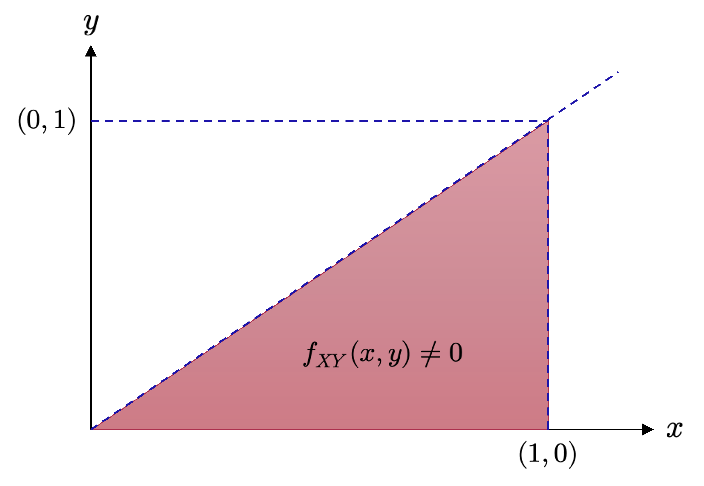
De esta manera, existe una probabilidad del 10.65% de que se almacene menos de la mitad de la capacidad del tanque y que, al mismo se tiempo, se cargue menos de un tercio de dicho combustible en una semana dada. Notemos además que la interpretación gráfica para el cálculo anterior es sencilla: Buscamos los valores de la función de distribución conjunta \(F_{XY}\) para los cuales \(f_{XY}\) es no negativa y, además, \(X\leq \frac{1}{2}\) e \(Y\leq \frac{1}{3}\), lo que equivale a la intersección de la región \(\mathcal{R}\) definida previamente y \(\mathcal{P} =\left\{ \left( x,y\right) \in \mathbb{R}^{2} :0\leq x\leq \frac{1}{2} \wedge 0\leq y\leq \frac{1}{3} \right\}\). Esta intersección se ilustra en la Figura 4.10, y corresponde al área sombreada en color morado.
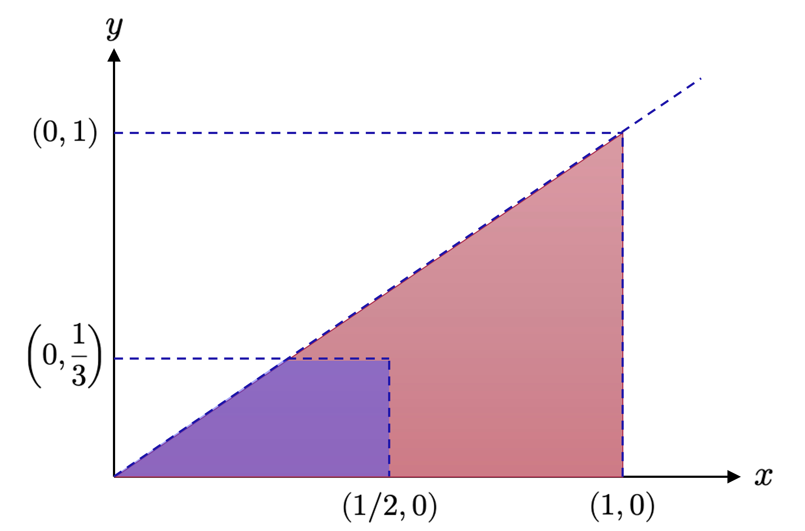
Hagamos otro ejercicio y revisemos cuál es la probabilidad de que la cantidad de combustible cargada en los vehículos menores sea menor que la mitad del diésel almacenado en el tanque. En otras palabras, buscamos la probabilidad \(P(Y< \frac{X}{2})\). Este es un ejemplo de función de probabilidad compuesta, donde existe una dependencia explícita de una de las variables con respecto a la otra. En este caso, la región de integración corresponde a la intersección entre \(\mathcal{R}\) y el gráfico \(y= \frac{x}{2}\). Dicha intersección se ilustra en la Figura 4.11.
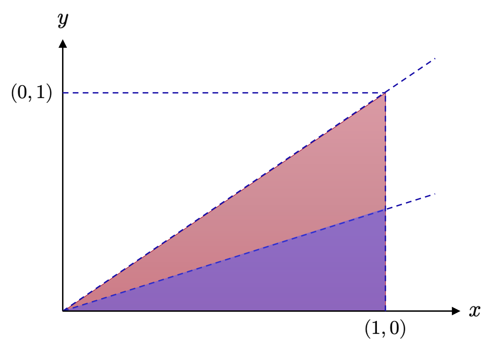
El cálculo de la probabilidad \(P(Y< \frac{X}{2})\) se realiza como sigue,
\[ \begin{array}{lll}P\left( Y<\displaystyle \frac{X}{2} \right) &=&\displaystyle \int^{1}_{0} \int^{\frac{1}{2} x}_{0} 3x\ dxdy\\ &=&\displaystyle \int^{1}_{0} \left[ 3xy\right]^{y=\frac{1}{2} x}_{y=0} dx\\ &=&\displaystyle \int^{1}_{0} \left( \frac{3}{2} x^{2}-0\right) dx\\ &=&\displaystyle \frac{1}{2} \end{array} \tag{4.72} \]
Luego hay una probabilidad del 50% de que la cantidad de combustible cargado en los vehículos menores sea menos de la mitad del diésel almacenado en el tanque, en una semana dada. ◼︎
4.8 Fórmula de Bayes
Habíamos comentado que, una vez definidos los conceptos de función de densidad y función de distribución, sólo existen dos reglas fundamentales para caracterizar en su totalidad un experimento aleatorio. A continuación, describiremos tales reglas.
Consideremos entonces dos variables aleatorias discretas \(X\) e \(Y\), siendo \(f_{XY}(x,y)\) su función de densidad conjunta, con \(f_{X}(x)\) y \(f_{Y}(y)\) las correspondientes funciones marginales de densidad. Sea \(f_{Y|X}(x,y)\) la función condicional de densidad que describe las probabilidades de ocurrencia de \(Y\) dado \(X\). Si \(X\) e \(Y\) son variables discretas, las funciones de masa conjunta, marginales y condicional, se denotan como \(p_{XY}(x,y), p_{X}(x), p_{Y}(y)\) y \(p_{Y|X}(x,y)\). La regla de la suma extendida a las variables aleatorias establece que
\[ \underbrace{f_{X}\left( x\right) }_{p_{X}\left( x\right) \ \mathrm{en\ el\ caso\ discreto} } =\begin{cases}\displaystyle \sum_{y\in \Omega_{Y} } p_{XY}\left( x,y\right) &;\ \mathrm{si} \ Y\ \mathrm{es\ discreta} \\ \displaystyle \int_{\Omega_{Y} } f_{XY}\left( x,y\right) dy&:\ \mathrm{si} \ Y\ \mathrm{es\ continua} \end{cases} \tag{4.73} \]
Donde \(\Omega_{Y}\) es el conjunto de los estados posibles que puede tomar la variable aleatoria \(Y\).
La regla de la suma es conocida en la práctica como propiedad de marginalización. Permite relacionar una función de densidad conjunta con una función marginal de densidad. En general, cuando la función de densidad conjunta contiene más de dos variables aleatorias, la regla de la suma puede aplicarse a cualquier subconjunto de variables, lo que resulta en una función marginal de densidad que, potencialmente, puede depender de más de una variable. En términos más concretos, si \(\mathbf{x} \in \mathbb{R}^{n}\), entonces dicha función marginal de densidad será
\[ f_{X_{i}}\left( x_{i}\right) =\int_{\Omega_{X\setminus i} } f_{\mathbf{X} }\left( x_{1},...,x_{n}\right) d\mathbf{x}_{\setminus i} \tag{4.74} \]
habiendo aplicado repetidamente la regla de la suma, y donde la integral (o suma, en el caso discreto) se aplica con respecto a todas las variables con excepción de \(x_{i}\), lo que se indica como \(d\mathbf{x}_{\setminus i}\) en el factor integrador (y que se lee “respecto de todo, menos de \(x_{i}\)”).
Muchos de los desafíos computacionales relativos al modelamiento de fenómenos a nivel probabilístico se deben a la aplicación de la regla de la suma. Cuando hay muchas variables (continuas o discretas) que pueden tomar un número relativamente grande de estados, la regla de la suma exige la resolución de sumas con muchos términos interiores o de integrales sobre hipersuperficies de enorme dimensión. Estas operacionales son extremadamente costosas en términos computacionales, en el sentido de que no existe un algoritmo que permita, en un tiempo polinómico, calcular tales sumas o integrales de manera exacta.
La segunda regla fundamental, que corresponde a la regla del producto extendida a las variables aleatorias, relaciona la función de densidad conjunta de las variables aleatorias \(X\) e \(Y\) con su distribución condicional como sigue
\[ f_{XY}\left( x,y\right) =f_{Y|X}\left( x,y\right) f_{X}\left( x\right) \tag{4.75} \]
La regla del producto puede interpretarse como sigue: Cada función de densidad conjunta de dos variables puede ser factorizada (es decir, escribirse como un producto) por otras dos funciones de densidad. Tales factores son la función marginal de densidad de la primera variable aleatoria (\(f_{X}(x)\)) y la función condicional de densidad de la segunda variable dada la primera (\(f_{Y|X}(x,y)\)). Dado que el orden de las variables en las funciones de densidad es irrelevante (es decir, \(f_{XY}(x,y)=f_{YX}(x,y)\)), la regla del producto también implica que \(f_{XY}(x,y)=f_{X|Y}(x,y)f_{Y}(y)\).
En los campos de los algoritmos de aprendizaje y la estadística Bayesiana, con frecuencia, estamos interesados en hacer inferencias en relación a variables aleatorias no observadas (latentes), dado el hecho de que hemos observado otras variables aleatorias. Asumamos que tenemos algún conocimiento previo (empírico o experimental) \(f_{\mathbf{X} }\left( \mathbf{x} \right)\) con respecto a algún vector aleatorio \(\mathbf{X}\), y alguna relación \(f_{\mathbf{Y} |\mathbf{X} }\left( \mathbf{x} ,\mathbf{y} \right)\) entre \(\mathbf{X}\) y una segunda variable aleatoria \(\mathbf{Y}\), la cual podemos observar en la realidad. En estas condiciones, podemos utilizar el teorema de Bayes para formular algunas conclusiones relativas a \(\mathbf{X}\) dados los valores observados de \(\mathbf{Y}\). De esta manera, podemos establecer que la fórmula de Bayes:
\[ \underbrace{f_{\mathbf{X} |\mathbf{Y} }\left( \mathbf{x} ,\mathbf{y} \right) }_{\mathrm{a\ posteriori} } =\frac{\overbrace{f_{\mathbf{Y} |\mathbf{X} }\left( \mathbf{x} ,\mathbf{y} \right) }^{\mathrm{verosimilitud} } \ \overbrace{f_{\mathbf{X} }\left( \mathbf{x} \right) }^{\mathrm{a\ priori} } }{\underbrace{f_{\mathbf{Y} }\left( \mathbf{y} \right) }_{\, \mathrm{evidencia} } } \tag{4.76} \]
es una consecuencia directa de la regla del producto, ya que
\[ f_{\mathbf{X} \mathbf{Y} }\left( \mathbf{x} ,\mathbf{y} \right) =f_{\mathbf{X} |\mathbf{Y} }\left( \mathbf{x} ,\mathbf{y} \right) f_{\mathbf{Y} }\left( \mathbf{y} \right) \wedge f_{\mathbf{X} \mathbf{Y} }\left( \mathbf{x} ,\mathbf{y} \right) =f_{\mathbf{Y} |\mathbf{X} }\left( \mathbf{x} ,\mathbf{y} \right) f_{\mathbf{X} }\left( \mathbf{x} \right) \tag{4.77} \]
Por lo tanto,
\[ f_{\mathbf{X} |\mathbf{Y} }\left( \mathbf{x} ,\mathbf{y} \right) f_{\mathbf{Y} }\left( \mathbf{y} \right) =f_{\mathbf{Y} |\mathbf{X} }\left( \mathbf{x} ,\mathbf{y} \right) f_{\mathbf{X} }\left( \mathbf{x} \right) \Longleftrightarrow f_{\mathbf{X} |\mathbf{Y} }\left( \mathbf{x} ,\mathbf{y} \right) =\frac{f_{\mathbf{Y} |\mathbf{X} }\left( \mathbf{x} ,\mathbf{y} \right) f_{\mathbf{X} }\left( \mathbf{x} \right) }{f_{\mathbf{Y} }\left( \mathbf{y} \right) } \tag{4.78} \]
En la ecuación (4.76), la función de densidad \(f_{\mathbf{X} }\left( \mathbf{x} \right)\) es la probabilidad a priori, la cual engloba todo nuestro conocimiento subjetivo respecto de una variable desconocida (latente) 𝐱 antes de observar cualquier otra data. Podemos escoger cualquier probabilidad a priori que queramos o que nos haga sentido, pero debemos asegurarnos que la función de densidad \(f_{\mathbf{X} }\left( \mathbf{x} \right)\) sea distinto de cero durante todo su recorrido (es decir, \(f_{\mathbf{X} }\left( \mathbf{x} \right)\neq 0\) para todo los \(\mathbf{x}\) plausibles, incluso aunque sean raros).
La función de verosimilitud \(f_{\mathbf{Y} |\mathbf{X} }\left( \mathbf{x} ,\mathbf{y} \right)\) describe como se relacionan \(\mathbf{x}\) e \(\mathbf{y}\), y en el caso de distribuciones discretas de probabilidad, corresponde a la probabilidad asociada a la data representada por \(\mathbf{y}\) si conociéramos la variable latente \(\mathbf{x}\). Notemos que la función de verosimilitud no es una distribución en \(\mathbf{x}\), sino que sólo en \(\mathbf{y}\). La función \(f_{\mathbf{Y} |\mathbf{X} }\left( \mathbf{x} ,\mathbf{y} \right)\) suele denominarse como función de verosimilitud de \(\mathbf{x}\) (dado \(\mathbf{y}\)) o probabilidad de \(\mathbf{y}\) dado \(\mathbf{x}\), pero nunca como función de verosimilitud (únicamente) de \(\mathbf{y}\).
La probabilidad a posteriori \(f_{\mathbf{X} |\mathbf{Y} }\left( \mathbf{x} ,\mathbf{y} \right)\) es la cantidad de interés por antonomasia en la estadística Bayesiana, debido a que expresa exactamente lo que queremos: Lo que sabemos de \(\mathbf{x}\) una vez que hemos observado \(\mathbf{y}\).
La cantidad
\[ f_{\mathbf{Y} }\left( \mathbf{y} \right) :=\int_{\mathbb{R}^{n} } f_{\mathbf{Y} |\mathbf{X} }\left( \mathbf{x} ,\mathbf{y} \right) f_{\mathbf{X} }\left( \mathbf{x} \right) d\mathbf{x} =\mathrm{E}_{\mathbf{X} } \left[ f_{\mathbf{Y} |\mathbf{X} }\left( \mathbf{x} ,\mathbf{y} \right) \right] \tag{4.79} \]
Es llamada evidencia. El lado derecho de la ecuación (4.79) hace uso de un operador que hemos escrito como \(\mathrm{E}_{\mathbf{X} } \left[ \ \cdot \ \right]\) y que es llamado operador de esperanza condicional con respecto a la variable aleatoria \(\mathbf{X}\). Podemos definir dicho operador, tanto para variables aleatorias discretas como continuas, de la siguiente manera.
Definición 4.11 – Esperanza condicional: Sea \(A\) un evento en \(\Omega\) con probabilidad no nula y sea \(X\) una variable aleatoria discreta. Sea define la esperanza condicional de \(X\) dado el evento \(A\) como
\[ \begin{array}{lll}\mathrm{E}_{A} \left[ X\right] &=&\mathrm{E} \left[ X|A\right] \\ &=&\displaystyle \sum_{x} xP\left( X=x|A\right) \\ &=&\displaystyle \sum_{x} x\displaystyle \frac{P\left( \left\{ X=x\right\} \cap A\right) }{P\left( A\right) } \end{array} \tag{4.80} \]
Donde la suma se toma sobre todos los posibles resultados de \(X\) (y donde cada uno de ellos se denota como \(x\)). Notemos que la fórmula anterior es válida incluso para vectores aleatorios discretos \(\mathbf{X}\), siempre que tomemos tantos índices en la suma como componentes tenga dicho vector.
Por otro lado si \(X\) e \(Y\) son variables aleatorias discretas, entonces la esperanza condicional de \(X\) dado \(Y\) se define como
\[ \begin{array}{lll}\mathrm{E}_{Y} \left[ X\right] &=&\mathrm{E} \left[ X|Y=y\right] \\ &=&\displaystyle \sum_{x} xP\left( X=y|Y=y\right) \\ &=&\displaystyle \sum_{x} x\displaystyle \frac{P\left( X=x,Y=y\right) }{P\left( Y=y\right) } \\ &=&\displaystyle \sum_{x} x\displaystyle \frac{p_{XY}\left( x,y\right) }{p_{Y}\left( y\right) } \end{array} \tag{4.81} \]
Donde \(p_{XY}(x,y)\) es la función de masa conjunta de probabilidad para el vector aleatorio \((X,Y)\). Notemos que, como antes, si las variables involucradas son multidimensionales, la fórmula anterior no cambia, pero sí deben considerarse más índices en la sumatoria.
Finalmente, si \(X\) e \(Y\) son variables aleatorias continuas con función de densidad conjunta \(f_{XY}(x,y)\), función de densidad para \(Y\) denotada como \(f_{Y}(y)\) y función de densidad condicional \(f_{X|Y}(x,y)\), entonces la esperanza condicional de \(X\) dado \(Y\) se define como
\[ \begin{array}{lll}\mathrm{E}_{Y} \left[ X\right] &=&\mathrm{E} \left[ X|Y=y\right] \\ &=&\displaystyle \int^{+\infty }_{-\infty } xf_{X|Y}\left( x,y\right) dx\\ &=&\displaystyle \frac{1}{f_{Y}\left( y\right) } \int^{+\infty }_{-\infty } xf_{XY}\left( x,y\right) dx\end{array} \tag{4.82} \]
Para dos variables aleatorias multidimensionales \(\mathbf{X}\) e \(\mathbf{Y}\) con \(m\) componentes cada una, la fórmula anterior se extiende fácilmente como sigue,
\[ \begin{array}{lll}\mathrm{E}_{\mathbf{Y} } \left[ \mathbf{X} \right] &=&\mathrm{E} \left[ \mathbf{X} |\mathbf{Y} =\mathbf{y} \right] \\ &=&\displaystyle \int_{\mathbb{R}^{n} } \mathbf{x} f_{\mathbf{X} |\mathbf{Y} }\left( \mathbf{x} ,\mathbf{y} \right) d\mathbf{x} \\ &=&\displaystyle \frac{1}{f_{\mathbf{Y} }\left( \mathbf{y} \right) } \int_{\mathbb{R}^{n} } \mathbf{x} f_{\mathbf{X} \mathbf{Y} }\left( \mathbf{x} ,\mathbf{y} \right) d\mathbf{x} \end{array} \tag{4.83} \]
Por definición, la evidencia integra el numerador en la ecuación (4.83) con respecto a la variable latente \(\mathbf{x}\). Por lo tanto, la evidencia es independiente de \(\mathbf{x}\) y, de este modo, garantiza que la función de densidad a posteriori \(f_{\mathbf{X} |\mathbf{Y} }\left( \mathbf{x} ,\mathbf{y} \right)\) esté normalizada; es decir, que su rango de valores tenga media nula y desviación estándar unitaria. La evidencia juega un papel fundamental en la selección de modelos con enfoque Bayesiano, como discutiremos en secciones posteriores. Por supuesto, la integral en la ecuación (4.83) implica que, con frecuencia, la evidencia es computacionalmente costosa de calcular.
4.9 Esperanza y varianza para variables aleatorias multidimensionales
Con frecuencia estamos interesados en resumir información representativa de conjuntos de variables aleatorias, o bien, comparar dos variables aleatorias. Un estadígrafo referido a una variable aleatoria corresponde a una función determinística de esa variable aleatoria. Los estadígrafos de resumen (conocidos también como métricas representativas) de una distribución de probabilidad nos proveen de información valiosa en relación al comportamiento de la(s) variable(s) aleatoria(s) subyacente(s), ya que permiten, mediante números sencillos, resumir y caracterizar una distribución. El valor esperado (esperanza) y la varianza son dos métricas representativas que ya desarrollamos previamente para el caso de variables aleatorias unidimensionales. En esta subsección, extenderemos tales conceptos a variables aleatorias multidimensionales aprovechando las herramientas que desarrollamos en nuestro estudio del álgebra lineal, y luego construiremos una forma de comparar dos variables aleatorias.
La media y la varianza son útiles, como vimos previamente, para describir ciertas propiedades de interés de las distribuciones de probabilidad (valores esperados y dispersión). Más adelante veremos que existe una familia útil de distribuciones (llamada familia exponencial), donde los estadígrafos de cualquier variable aleatoria inherente a las mismas capturan prácticamente toda la información de nuestro interés. El concepto de valor esperado es fundamental en machine learning. Por esa razón, es importante entenderlo muy bien y desarrollarlo desde sus bases más elementales. Motivamos así la siguiente definición, equivalente a las definiciones (4.4) y (4.5), para el valor esperado, pero desde una perspectiva más estadística.
Definición 4.12 – Valor esperado (como métrica representativa): Sea \(X\) una variable aleatoria continua con función de densidad \(f_{X}(x)\), siendo \(x\in \mathrm{Rec}(X)\). El valor esperado de una función \(g:\mathbb{R} \longrightarrow \mathbb{R}\) de \(X\) se define como
\[ \mathrm{E}_{X} \left[ g\left( x\right) \right] =\int_{\Omega_{X} } g\left( x\right) f_{X}\left( x\right) dx \tag{4.84} \]
Donde la integral se toma sobre todos los valores posibles de \(X\), representados por el conjunto \(\Omega_{X}\). Correspondientemente, para el caso de una variable aleatoria discreta \(X\) con función de masa de probabilidad \(p_{X}(x)\), el valor esperado de la función \(g\) se define como
\[ \mathrm{E}_{X} \left[ g\left( x\right) \right] =\sum_{x\in \Omega_{X} } g\left( x\right) f_{X}\left( x\right) dx \tag{4.85} \]
En esta subsección, consideraremos variables aleatorias tales que sus resultados sean siempre numéricos. Dicho de otro modo, la función \(g\) tendrá siempre como dominio un subconjunto de \(\mathbb{R}\). Además, consideraremos que las variables aleatorias multidimensionales, de la misma forma que los vectores en \(\mathbb{R}^{n}\), corresponden a arreglos matriciales del tipo \(\mathbf{X}=(X_{1},...,X_{n})^{\top}\). De este modo, para el caso de un vector aleatorio \(\mathbf{X}\) de este tipo, definimos el valor esperado de la función \(g:\mathbb{R}^{n} \longrightarrow \mathbb{R}\) como el vector \(\mathrm{E}_{\mathbf{X} } \left[ g\left( \mathbf{x} \right) \right] \in \mathbb{R}^{n}\) tal que
\[ \mathrm{E}_{\mathbf{X} } \left[ g\left( \mathbf{x} \right) \right] =\left( \begin{array}{c}\mathrm{E}_{X_{1}} \left[ g\left( x_{1}\right) \right] \\ \vdots \\ \mathrm{E}_{X_{n}} \left[ g\left( x_{n}\right) \right] \end{array} \right) \in \mathbb{R}^{n} \tag{4.86} \]
Donde \(\mathrm{E}_{X_{j}}\) es el operador de esperanza matemática (de la función \(g:\mathbb{R} \longrightarrow \mathbb{R}\)) tomado sobre la \(j\)-ésima componente del vector aleatorio \(\mathbf{X}\). Las definiciones (4.4) y (4.5) sugieren tomar el operador \(\mathrm{E}_{X_{j}}\) de forma tal que las integrales resultantes se tomen siempre con respecto a la función de densidad de probabilidad respectiva (para vectores continuos), o a la suma de todos los estados posibles (para variables discretas). La media es un caso particular del valor esperado, donde \(g\) corresponde a la función identidad (es decir, \(g(\mathbf{x})=\mathbf{x}\), para todo \(\mathbf{x}\in \mathbb{R}^{n}\)). Tiene sentido, por tanto, la siguiente definición.
Definición 4.13 – Media (de un vector aleatorio): Sea \(\mathbf{X}=(X_{1},...,X_{n})\) un vector aleatorio cuyos estados (resultados) se representan por medio del vector \(\mathbf{x}\in \mathbb{R}^{n}\). Definimos la media del vector \(\mathbf{X}\) como
\[ \mathrm{E}_{\mathbf{X} } \left[ \mathbf{x} \right] =\left( \begin{array}{c}\mathrm{E}_{X_{1}} \left[ x_{1}\right] \\ \vdots \\ \mathrm{E}_{X_{n}} \left[ x_{n}\right] \end{array} \right) \in \mathbb{R}^{n} \tag{4.87} \]
Donde,
\[ \mathrm{E}_{X_{j}} \left[ x_{j}\right] :=\begin{cases}\displaystyle \int_{\Omega_{\mathbf{X}} } x_{j}f_{X_{j}}\left( x_{j}\right) dx_{j}&;\ \mathrm{si} \ \mathbf{X} \ \mathrm{es\ un\ vector\ aleatorio\ continuo} \\ \displaystyle \sum_{x_{i}\in \Omega_{\mathbf{X}} } x_{i}P\left( x_{j}=x_{i}\right) &;\ \mathrm{si} \ \mathbf{X} \ \mathrm{es\ un\ vector\ aleatorio\ discreto} \end{cases} \tag{4.88} \]
para \(j=1,...,n\), donde el subíndice \(j\) indica la correspondiente dimensión de \(\mathbf{x}\). Tanto la integral como la suma (dependiendo si \(\mathbf{X}\) es un vector aleatorio continuo o discreto) se toman sobre el conjunto de estados posibles de \(\mathbf{X}\), que denotamos como \(\Omega_{\mathbf{X}}\). La media suele denotarse como \(\mathbf{\mu}\).
Para el caso de dos variables aleatorias, con frecuencia, queremos caracterizar la correspondencia que pueda existir entre ellas. Para ello, resulta útil el concepto de covarianza, la cual, de forma intuitiva, representa la noción de qué tan dependientes son dos variables aleatorias la una de la otra. Para el caso de variables aleatorias univariantes, tiene sentido la siguiente definición.
Definición 4.14 – Covarianza (caso univariante): Sean \(X\) e \(Y\) variables aleatorias con rangos de resultados \(\Omega_{X}\) y \(\Omega_{Y}\), respectivamente (en \(\mathbb{R}\)), tales que \(x\in \Omega_{X}\) e \(y\in \Omega_{Y}\). La covarianza entre \(X\) e \(Y\), que denotamos como \(\mathrm{Cov}(X,Y)\), se define como el producto esperado de sus desviaciones con respecto a sus correspondientes medias. Es decir,
\[ \mathrm{Cov} \left( X,Y\right) :=\mathrm{E}_{X,Y} \left[ \left( x-\mathrm{E}_{X} \left[ x\right] \right) \left( y-\mathrm{E}_{Y} \left[ y\right] \right) \right] \tag{4.89} \]
Es decir, tomando la definición de valor esperado,
\[ \mathrm{Cov} \left( X,Y\right) :=\mathrm{E}_{X,Y} \left[ \left( x-\int_{\Omega_{X} } xf_{X}\left( x\right) dx\right) \left( y-\int_{\Omega_{Y} } yf_{Y}\left( y\right) dy\right) \right] \tag{4.90} \]
Cuando la variable aleatoria asociada con la esperanza o la covarianza de nuestro interés es clara en sus argumentos (en términos de su(s) dependencia(s)), el subíndice asociado a los correspondientes operadores suele suprimirse (por ejemplo, \(\mathrm{E}_{X}[x]\) puede escribirse como \(\mathrm{E}[x]\)). Si aplicamos la propiedad propiedad de linealidad del operador de esperanza matemática a la definición de covarianza, podemos desarrollar la ecuación (4.90) como
\[ \begin{array}{rcl}\mathrm{Cov} \left( X,Y\right) &=&\mathrm{E}_{X,Y} \left[ \left( x-\mathrm{E}_{X} \left[ x\right] \right) \left( y-\mathrm{E}_{Y} \left[ y\right] \right) \right] \\ &=&\mathrm{E}_{X,Y} \left[ xy-x\mathrm{E}_{Y} \left[ y\right] -y\mathrm{E}_{X} \left[ x\right] +\mathrm{E}_{X} \left[ x\right] \mathrm{E}_{Y} \left[ y\right] \right] \\ &=&\mathrm{E}_{X,Y} \left[ xy\right] -\mathrm{E}_{X} \left[ x\right] \mathrm{E}_{Y} \left[ y\right] \underbrace{-\mathrm{E}_{X} \left[ x\right] \mathrm{E}_{Y} \left[ y\right] +\mathrm{E}_{X} \left[ x\right] \mathrm{E}_{Y} \left[ y\right] }_{=0} \\ &=&\mathrm{E}_{X,Y} \left[ xy\right] -\mathrm{E}_{X} \left[ x\right] \mathrm{E}_{Y} \left[ y\right] \\ &\overbrace{=}^{\mathrm{suprimimos\ indices} } &\mathrm{E} \left[ xy\right] -\mathrm{E} \left[ x\right] \mathrm{E} \left[ y\right] \end{array} \tag{4.91} \]
El cambio de notación es simplemente para dejar en claro que los cálculos subyacentes a la esperanza y covarianza se realizan en función de los estados de las variables aleatorias (por eso ahora hemos escrito, por ejemplo, \(\mathrm{E}[x]\) en vez de \(\mathrm{E}[X]\), a diferencia de cuando recién definimos el operador de esperanza matemática).
La covarianza de una variable aleatoria con respecto a sí misma (es decir, \(\mathrm{Cov}(X,X)\)) corresponde a la varianza de la misma (la que establecimos en la definición (4.6)). Como en el caso de la esperanza matemática y la covarianza, vamos a referenciar la varianza igualmente con respecto a los estados de las correspondientes variables aleatorias de interés (es decir, escribiremos \(\mathrm{Var}(x)\) en vez de \(\mathrm{Var}(X)\)). Por lo tanto, la desviación estándar será escrita igualmente como \(\sigma(x)\). Y la covarianza entre dos variables aleatorias \(X\) e \(Y\) se escribirá asimismo como \(\mathrm{Cov}(x,y)\)
A continuación, generalizaremos el concepto de covarianza a vectores aleatorios.
Definición 4.15 – Covarianza (caso multivariante): Sean \(\mathbf{X}\) e \(\mathbf{Y}\) dos vectores aleatorios con estados \(\mathbf{x}\in \mathbb{R}^{n}\) e \(\mathbf{y}\in \mathbb{R}^{d}\). Definimos la covarianza entre ambos vectores aleatorios como la matriz
\[ \mathrm{Cov} \left( \mathbf{x} ,\mathbf{y} \right) =\mathrm{E} \left[ \mathbf{x} \mathbf{y}^{\top } \right] -\mathrm{E} \left[ \mathbf{x} \right] \mathrm{E} \left[ \mathbf{y} \right]^{\top } =\mathrm{Cov} \left( \mathbf{y} ,\mathbf{x} \right)^{\top } \in \mathbb{R}^{n\times d} \tag{4.92} \]
La definición (4.15) puede aplicarse mediante la misma variable aleatoria multidimensional en ambos argumentos, lo que resulta en un medida de la “dispersión” entre cada una de las componentes de dicha variable por medio de la varianza obtenida de esta manera. Por lo tanto, la varianza nos entrega una descripción de la relación entre las dimensiones individuales de un vector aleatorio determinado. Esto motiva la siguiente definición.
Definición 4.16 – Varianza de un vector aleatorio: Sea \(\mathbf{X}\) un vector aleatorio de dimensión \(n\) con estados \(\mathbf{x}\in \mathbb{R}^{n}\). Si \(\mathbf{\mu}\in \mathbb{R}^{n}\) es la media \(\mathbf{X}\), definimos su varianza como
\[ \begin{array}{lll}\mathrm{Var} \left( \mathbf{x} \right) &=&\mathrm{Cov} \left( \mathbf{x} ,\mathbf{x} \right) \\ &=&\mathrm{E}_{\mathbf{X} } \left[ \left( \mathbf{x} -\mathbf{\mu } \right) \left( \mathbf{x} -\mathbf{\mu } \right)^{\top } \right] =\mathrm{E}_{\mathbf{X} } \left[ \mathbf{x} \mathbf{x}^{\top } \right] -\mathrm{E}_{\mathbf{X} } \left[ \mathbf{x} \right] \left( \mathrm{E}_{\mathbf{X} } \left[ \mathbf{x} \right] \right)^{\top } \\ &=&\left( \begin{array}{cccc}\mathrm{Cov} \left( x_{1},x_{1}\right) &\mathrm{Cov} \left( x_{1},x_{2}\right) &\cdots &\mathrm{Cov} \left( x_{1},x_{n}\right) \\ \mathrm{Cov} \left( x_{2},x_{1}\right) &\mathrm{Cov} \left( x_{2},x_{2}\right) &\cdots &\mathrm{Cov} \left( x_{2},x_{n}\right) \\ \vdots &\vdots &\ddots &\vdots \\ \mathrm{Cov} \left( x_{n},x_{1}\right) &\mathrm{Cov} \left( x_{n},x_{2}\right) &\cdots &\mathrm{Cov} \left( x_{n},x_{n}\right) \end{array} \right) \\ &=&\left(\displaystyle \begin{array}{cccc}\mathrm{Var} \left( x_{1}\right) &\mathrm{Cov} \left( x_{1},x_{2}\right) &\cdots &\mathrm{Cov} \left( x_{1},x_{n}\right) \\ \mathrm{Cov} \left( x_{2},x_{1}\right) &\mathrm{Var} \left( x_{2}\right) &\cdots &\mathrm{Cov} \left( x_{2},x_{n}\right) \\ \vdots &\vdots &\ddots &\vdots \\ \mathrm{Cov} \left( x_{n},x_{1}\right) &\mathrm{Cov} \left( x_{n},x_{2}\right) &\cdots &\mathrm{Var} \left( x_{n}\right) \end{array} \right) \end{array} \tag{4.93} \]
La matriz anterior suele denominarse como matriz de covarianza del vector \(\mathbf{X}\), y suele además denotarse como \(\mathbf{\Sigma}\). Dicha matriz es simétrica y semidefinida positiva y, como comentamos previamente, nos entrega información valiosa con respecto a la dispersión de las componentes del vector \(\mathbf{X}\), las unas con las otras. La diagonal principal de la matriz de covarianza \(\mathbf{\Sigma}\) nos entrega información de las varianzas relativas a las componentes de \(\mathbf{X}\), las que naturalmente se corresponden con las varianzas asociadas a sus densidades marginales.
Ejemplo 4.17: Vamos a ejercitar los conceptos que hemos desarrollado en esta subsección. En primer lugar, consideraremos las variables aleatorias continuas \(X\) e \(Y\) cuya función de densidad conjunta de probabilidad se define como
\[ f_{XY}\left( x,y\right) =3x\ ;\ 0\leq y\leq x\leq 1 \tag{4.94} \]
y cero en cualquier otro caso. Vamos a calcular la covarianza entre ambas variables aleatorias. Para ello, calculamos primeramente las funciones marginales de densidad de cada una de las variables aleatorias. De esta manera, tenemos
\[ \begin{array}{l}f_{X}\left( x\right) =\displaystyle \int^{+\infty }_{-\infty } f_{XY}\left( x,y\right) dy=\int^{x}_{0} 3x\ dy=3x^{2}\ ;\ 0\leq x\leq 1\\ f_{Y}\left( y\right) =\displaystyle \int^{+\infty }_{-\infty } f_{XY}\left( x,y\right) dx=\int^{1}_{y} 3x\ dx=\left[ \frac{3}{2} x^{2}\right]^{x=1}_{x=y} =\frac{3}{2} \left( 1-y^{2}\right) \ ;\ 0\leq y\leq 1\end{array} \tag{4.95} \]
Por lo tanto, calculamos los valores esperados de cada una de estas variables como sigue
\[ \begin{array}{l}\mathrm{E}_{X} \left[ x\right] =\displaystyle \int^{+\infty }_{-\infty } xf_{X}\left( x\right) dx=\int^{1}_{0} x\cdot 3x^{2}dx=\left[ \frac{3}{2} x^{4}\right]^{x=1}_{x=0} =\frac{3}{4} \\ \mathrm{E}_{Y} \left[ y\right] =\displaystyle \int^{+\infty }_{-\infty } yf_{Y}\left( y\right) dy=\int^{1}_{0} y\cdot \frac{3}{2} \left( 1-y^{2}\right) dy=\left[ \frac{3}{2} \left( \frac{y^{2}}{2} -\frac{y^{4}}{4} \right) \right]^{y=1}_{y=0} =\frac{3}{2} \left( \frac{1}{2} -\frac{1}{4} \right) =\frac{3}{8} \end{array} \tag{4.96} \]
Luego calculamos las varianzas. Primero, para \(X\):
\[ \begin{array}{ll}&\mathrm{E}_{X} \left[ x^{2}\right] =\displaystyle \int^{+\infty }_{-\infty } x^{2}f_{X}\left( x\right) dx=\int^{1}_{0} x^{2}\cdot 3x^{2}dx=\left[ \frac{3}{5} x^{5}\right]^{x=1}_{x=0} =\frac{3}{5} \\ \Longrightarrow &\mathrm{Var} \left( x\right) =\mathrm{E}_{X} \left[ x^{2}\right] -\mathrm{E}^{2}_{X} \left[ x\right] =\displaystyle \frac{3}{5} -\left( \frac{3}{4} \right)^{2} =\frac{3}{80} \end{array} \tag{4.97} \]
Y ahora, para \(Y\):
\[ \begin{array}{ll}&\mathrm{E}_{Y} \left[ y^{2}\right] =\displaystyle \int^{+\infty }_{-\infty } y^{2}\cdot \frac{3}{2} \left( 1-y^{2}\right) dy=\left[ \frac{3}{2} \left( \frac{y^{2}}{2} -\frac{y^{4}}{4} \right) \right]^{y=1}_{y=0} =\frac{3}{2} \left( \frac{1}{3} -\frac{1}{5} \right) =\frac{1}{5} \\ \Longrightarrow &\mathrm{Var} \left( y\right) =\mathrm{E}_{Y} \left[ y^{2}\right] -\mathrm{E}^{2}_{Y} \left[ y\right] =\displaystyle \frac{1}{5} -\left( \frac{3}{8} \right)^{2} =\frac{19}{320} \end{array} \tag{4.98} \]
Conforme la definición de covarianza, sólo nos resta calcular \(\mathrm{E}_{X,Y}[xy]\). En efecto,
\[ \begin{array}{lll}\mathrm{E}_{X,Y} \left[ xy\right] &=&\displaystyle \int^{+\infty }_{-\infty } \displaystyle \int^{+\infty }_{-\infty } xyf_{XY}\left( x,y\right) dxdy\\ &=&\displaystyle \int^{1}_{0} \displaystyle \int^{x}_{0} xy\cdot 3x\ dx\\ &=&\displaystyle \int^{1}_{0} \left[ \displaystyle \int^{x}_{0} y\ dy\right] 3x^{2}dx\\ &=&\displaystyle \int^{1}_{0} \left[ \frac{y^{2}}{2} \right]^{y=x}_{y=0} 3x\ dx\\ &=&\displaystyle \int^{1}_{0} \displaystyle \frac{x^{2}}{2} \cdot 3x^{2}dx\\ &=&\displaystyle \frac{3}{2} \left[ \frac{x^{5}}{5} \right]^{x=1}_{x=0} \\ &=&\displaystyle \frac{3}{10} \end{array} \tag{4.99} \]
Por lo tanto,
\[ \begin{array}{lll}\mathrm{Cov} \left( x,y\right) &=&\mathrm{E}_{X,Y} \left[ xy\right] -\mathrm{E}_{X} \left[ x\right] \mathrm{E}_{Y} \left[ y\right] \\ &=&\displaystyle \frac{3}{10} -\frac{3}{4} \cdot \frac{3}{8} =\frac{3}{160} \end{array} \tag{4.100} \]
◼︎
Ejemplo 4.18: Sean \(X\) e \(Y\) variables aleatorias tales que \(\mathrm{E}_{X} \left[ x\right] =1\), \(\mathrm{E}_{X} \left[ x^{2}\right] =3\), \(\mathrm{E}_{X,Y} \left[ xy\right] =-4\) y \(\mathrm{E}_{Y} \left[ y\right] =2\). Vamos a determinar el valor de \(\mathrm{Cov} \left( x,2x+y\right)\). En efecto, usando la definición de covarianza y la linealidad del operador de esperanza matemática, tenemos que
\[ \begin{array}{lll}\mathrm{Cov} \left( x,2x+y\right) &=&\mathrm{E} \left[ x\left( 2x+y\right) \right] -\mathrm{E} \left[ x\right] \mathrm{E} \left[ 2x+y\right] \\ &=&2\mathrm{E} \left[ x^{2}\right] +\mathrm{E} \left[ xy\right] +\mathrm{E} \left[ x\right] \left( 2\mathrm{E} \left[ x\right] +\mathrm{E} \left[ y\right] \right) \\ &=&2\cdot 3+\left( -4\right) -1\left( 2\cdot 1+2\right) \\ &=&-2\end{array} \tag{4.101} \]
◼︎
Cuando queremos comparar las covarianzas entre distintos pares de variables aleatorias, la varianza individual (marginal) de cada una de ellas afecta el valor de tales covarianzas. Por supuesto, es normal que las unidades de medición que caracterizan los valores que toma un resultado para cualquier variable aleatorias alteren igualmente el valor de la covarianza (es decir, la covarianza es sensible al escalamiento de tales valores). Es natural preguntarnos, por tanto, si podemos disponer de una versión normalizada de la covarianza que sea invariante frente a los cambios de escala. Y resulta que, en efecto, sí existe, y es llamada correlación entre variables aleatorias. Tiene sentido pues la siguiente definición.
Definición 4.17 – Correlación: Sean \(X\) e \(Y\) variables aleatorias. La correlación entre ambas se define como
\[ \rho \left( x,y\right) =\frac{\mathrm{Cov} \left( x,y\right) }{\sqrt{\mathrm{Var} \left( x\right) \mathrm{Var} \left( y\right) } } =\frac{\mathrm{Cov} \left( x,y\right) }{\sigma \left( x\right) \sigma \left( y\right) } \tag{4.102} \]
La correlación entre las variables aleatorias que conforman un vector aleatorio de dimensión \(d\) resulta, al igual que en el caso de la covarianza, en una matriz de correlación de dimensión \(d\times d\). Esta matriz de correlación, de la misma forma que en el caso bidimensional presentado en la definición (4.17), no es más que una versión estandarizada de la matriz de covarianza; es decir, para un vector aleatorio \(\mathbf{X}=(X_{1},...,X_{d})\in \mathbb{R}^{d}\), la matriz de correlación \(\rho(\mathbf{X})\) equivale a la matriz de covarianza \(\mathrm{Cov}_{\mathbf{Z}}(\mathbf{z},\mathbf{z})\), donde \(\mathbf{Z}\) es el vector aleatorio estandarizado con estados \(z_{i}=x_{i}/\sigma(x_{i})\), para \(i=1,...,d\).
La correlación entre dos variables aleatorias puede interpretarse en términos de su signo. Debido a que corresponde a una versión estandarizada de la covarianza, es claro que \(-1\leq \rho(x,y)\leq 1\) para todo par de variables aleatorias \(X\) e \(Y\) (con estados \(x,y\in \mathbb{R}\)). Luego:
- \(\rho(x,y)>0\): Ambas variables son tales que, cuando 𝑋 crece, 𝑌 también tiende a hacerlo (correlación positiva).
- \(\rho(x,y)<0\): Ambas variables son tales que, cuando 𝑋 crece, 𝑌 tiende a decrecer, y viceversa (correlación negativa).
- \(\rho(x,y)=0\): Ambas variables no están correlacionadas.
Las situaciones definidas para los casos de correlación positiva y negativa se ilustran en la Figura 4.12.
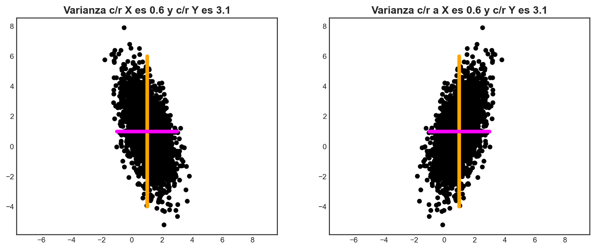
Ejemplo 4.19: Las variables aleatorias \(X_{1}\) y \(X_{2}\) representan dos observaciones de una señal que están distorsionadas por un nivel significativo de ruido. Tienen la misma media \(\mu\) y varianza \(\sigma^{2}\). La proporción de señal a ruido (signal-to-noise ratio, SNR) de la observación \(X_{1}\) o \(X_{2}\) se define como el inverso del cuadrado del coeficiente de variación de las mismas (media sobre la desviación estándar):
\[ \mathrm{SNR} =\frac{\mu^{2} }{\sigma^{2} } \tag{4.103} \]
Un diseñador de sistemas opta por definir una estrategia descriptiva de estas observaciones mediante la construcción de una nueva variable aleatoria \(S=(X_{1}+X_{2})/2\). Conforme a aquello,
- Mostraremos que la SNR de \(S\) es el doble de la SNR de \(X_{1}\) o \(X_{2}\) si ambas variables aleatorias no están correlacionadas.
- Supondremos que el diseñador del sistema se da cuenta que la estrategia de promedios está dando \(\mathrm{SNR}_{S}=\frac{3}{2} \mathrm{SNR}_{X}\). El diseñador asume correctamente que las observaciones \(X_{1}\) y \(X_{2}\) están correlacionadas. Determinaremos pues la correlación entre ambas variables aleatorias y, además, bajo qué condición sobre dicha correlación la estrategia de promedios puede resultar en un SNR para \(S\) arbitrariamente grande.
Para resolver (1), notemos que, en general, para \(S=(X_{1}+X_{2})/2\), se tiene que
\[ \begin{array}{l}\mathrm{E} \left[ s\right] =\mu_{S} =\mathrm{E} \left[ \displaystyle \frac{x_{1}+x_{2}}{2} \right] =\mu \\ \sigma^{2} \left( s\right) =\displaystyle \frac{\mathrm{Var} \left( x_{1}+x_{2}\right) }{4} =\displaystyle \frac{2\sigma^{2} +2\ \mathrm{Cov} \left( x_{1},x_{2}\right) }{4} =\displaystyle \frac{\sigma^{2} +\mathrm{Cov} \left( x_{1},x_{2}\right) }{2} \\ \mathrm{SNR}_{S} =\displaystyle \frac{2\mu^{2} }{\sigma^{2} +\mathrm{Cov} \left( x_{1},x_{2}\right) } \end{array} \tag{4.104} \]
En el cálculo de la varianza \(\sigma^{2}(s)\), hemos utilizado el hecho de que \(\mathrm{Var} \left( x+y\right) =\mathrm{Var} \left( x\right) +\mathrm{Var} \left( y\right) +2\ \mathrm{Cov} \left( x,y\right)\). Por lo tanto, si \(X_{1}\) y \(X_{2}\) no están correlacionadas (lo que implica que su covarianza es nula), entonces \(\mathrm{SNR}_{S} =2\mu^{2} /\sigma^{2} =2\ \mathrm{SNR}_{X}\), tal como queríamos demostrar.
Para el caso de (2), dado que \(\mathrm{Cov} \left( x_{1},x_{2}\right) =\sigma^{2} \rho \left( x_{1},x_{2}\right)\), la fórmula para \(\mathrm{SNR}_{S}\) toma la forma
\[ \mathrm{SNR}_{S} =\frac{2\mu^{2} }{\sigma^{2} \left( 1+\rho \left( x_{1},x_{2}\right) \right) } \tag{4.105} \]
Poniendo \(\mathrm{SNR}_{S} =\frac{3}{2} \mathrm{SNR}_{X} =\frac{3\mu^{2} }{2\sigma^{2} }\), obtenemos que \(\rho(x_{1},x_{2})=\frac{1}{3}\).
Finalmente, tenemos que
\[ \lim_{\rho \left( x_{1},x_{2}\right) \rightarrow -1} \left( \frac{2\mu^{2} }{\sigma^{2} \left( 1+\rho \left( x_{1},x_{2}\right) \right) } \right) \rightarrow +\infty \tag{4.106} \]
Luego, para que \(\mathrm{SNR}_{S} \rightarrow +\infty\), debe cumplirse que \(\rho \left( x_{1},x_{2}\right) \rightarrow -1\). ◼︎
4.9.1 Estadígrafos empíricos
Las definiciones de esperanza y covarianza revisadas en la subsección anterior son, con frecuencia, referidas como estadígrafos poblacionales, porque son válidos para poblaciones completas de datos. En machine learning, necesitamos aprender a partir de datos empíricos (obtenidos a partir de observaciones). Consideremos pues una variable aleatoria \(X\); hay dos pasos conceptuales que nos permiten transitar desde estadígrafos poblacionales a la realización de estadígrafos empíricos. Primero, usaremos el hecho de que disponemos de un conjunto de datos finito (de tamaño \(n\)) para construir un estadígrafo empírico que es función de un número finito de variables aleatorias idénticas, \(X_{1},...,X_{n}\). Luego, observamos la data; esto es, fijamos nuestra atención en las realizaciones (estados) \(x_{1},...,x_{n}\) de cada una de las variables aleatorias y, a partir de tales realizaciones, estimaremos los estadígrafos respectivos. Esto motiva la siguiente definición.
Definición 4.18 – Media y covarianza empíricas: Sea \(\mathbf{X}\) un vector aleatorio con realización \(\mathbf{x}\in \mathbb{R}^{d}\). Se define la media empírica (o muestral) de tal realización como la media aritmética de las observaciones de cada una de las componentes de \(\mathbf{X}\). Es decir,
\[ \bar{\mathbf{x} } :=\frac{1}{n} \sum^{n}_{j=1} \mathbf{x}_{j} \tag{4.107} \]
Por otro lado, definimos la covarianza empírica (o muestral) como
\[ \mathbf{\Sigma } :=\frac{1}{n} \sum^{n}_{j=1} \left( \mathbf{x}_{j} -\bar{\mathbf{x} } \right) \left( \mathbf{x}_{j} -\bar{\mathbf{x} } \right)^{\top } \in \mathbb{R}^{d\times d} \tag{4.108} \]
4.10 Transformaciones de variables aleatorias
En general, estamos interesados en modelar fenómenos que, con frecuencia, no pueden ser explicados mediante distribuciones de probabilidad de libro (aunque estudiaremos algunas de ellas un poco más adelante). Por lo tanto, se hace necesario saber operar con variables aleatorias y considerar incluso funciones de combinaciones entre ellas. Un ejemplo de esto es la extensión de las propiedades de la esperanza y (co)varianza a vectores aleatorios. Sean pues \(\mathbf{X}\) e \(\mathbf{Y}\) vectores aleatorios con estados \(\mathbf{x},\mathbf{y}\in \mathbb{R}^{d}\). Luego tenemos:
- (P1): Linealidad del operador de esperanza: \(\mathrm{E} \left[ \mathbf{x} \pm \mathbf{y} \right] =\mathrm{E} \left[ \mathbf{x} \right] \pm \mathrm{E} \left[ \mathbf{y} \right]\)
- (P2): Bilinealidad de la covarianza: \(\mathrm{Var} \left( \mathbf{x} \pm \mathbf{y} \right) =\mathrm{Var} \left( \mathbf{x} \right) +\mathrm{Var} \left( \mathbf{y} \right) \pm \mathrm{Cov} \left( \mathbf{x} ,\mathbf{y} \right) \pm \mathrm{Cov} \left( \mathbf{y} ,\mathbf{x} \right)\)
La media y la (co)varianza exhiben algunas propiedades útiles cuando trabajamos con transformaciones afines entre variables aleatorias. Consideremos una variable aleatoria \(\mathbf{X}\) con estados \(\mathbf{x}\in \mathbb{R}^{d}\), y con media \(\mathbf{\mu}\) y matriz de covarianza \(\mathbf{\Sigma}\). Consideremos además una transformación afín \(\mathbf{y} =\mathbf{Ax}+\mathbf{b}\) de \(\mathbf{x}\). Entonces \(\mathbf{y}\) es también la realización de una variable aleatoria cuyo vector de medias y matriz de covarianza se expresan como
\[ \begin{array}{l}\mathrm{E}_{\mathbf{Y} } \left[ \mathbf{y} \right] =\mathrm{E}_{\mathbf{X} } \left[ \mathbf{A} \mathbf{x} +\mathbf{b} \right] =\mathbf{A} \mathrm{E}_{\mathbf{X} } \left[ \mathbf{x} \right] +\mathbf{b} =\mathbf{A} \mathbf{\mu } +\mathbf{b} \\ \mathrm{Var} \left( \mathbf{y} \right) =\mathrm{Var} \left( \mathbf{A} \mathbf{x} +\mathbf{b} \right) =\mathrm{Var} \left( \mathbf{A} \mathbf{x} \right) =\mathbf{A} \mathrm{Var} \left( \mathbf{x} \right) \mathbf{A}^{\top } =\mathbf{A} \mathbf{\Sigma } \mathbf{A}^{\top } \end{array} \tag{4.109} \]
Además, se tiene que
\[ \begin{array}{lcl}\mathrm{Cov} \left( \mathbf{x} ,\mathbf{y} \right) &=&\mathrm{E} \left[ \mathbf{x} \left( \mathbf{A} \mathbf{x} +\mathbf{b} \right)^{\top } \right] \\ &=&\mathrm{E} \left[ \mathbf{x} \right] \mathbf{b}^{\top } +\mathrm{E} \left[ \mathbf{x} \mathbf{x}^{\top } \right] \mathbf{A}^{\top } -\mathbf{\mu } \mathbf{b}^{\top } -\mathbf{\mu } \mathbf{\mu }^{\top } \mathbf{A}^{\top } \\ &=&\mathbf{\mu } \mathbf{b}^{\top } -\mathbf{\mu } \mathbf{b}^{\top } +\left( \mathrm{E} \left[ \mathbf{x} \mathbf{x}^{\top } \right] -\mathbf{\mu } \mathbf{\mu }^{\top } \right) \mathbf{A}^{\top } \\ &\underbrace{=}_{\mathrm{Ec.} \ \left( 4.109\right) } &\mathbf{\Sigma } \mathbf{A}^{\top } \end{array} \tag{4.110} \]
Donde \(\mathbf{\Sigma } =\mathrm{E} \left[ \mathbf{x} \mathbf{x}^{\top } \right] -\mathbf{\mu } \mathbf{\mu }^{\top }\) es la covarianza de \(\mathbf{X}\).
Con los desarrollos anteriores, podemos darle sentido a la siguiente definición.
Definición 4.19 – Independencia: Sean \(\mathbf{X}\) e \(\mathbf{Y}\) dos variables aleatorias con estados \(\mathbf{x},\mathbf{y}\in \mathbb{R}^{d}\). Diremos que \(\mathbf{X}\) e \(\mathbf{Y}\) son estadísticamente independientes si y sólo si
\[ f_{\mathbf{X} \mathbf{Y} }\left( \mathbf{x} ,\mathbf{y} \right) =f_{\mathbf{X} }\left( \mathbf{x} \right) f_{\mathbf{Y} }\left( \mathbf{y} \right) \tag{4.111} \]
Intuitivamente, dos variables aleatorias \(\mathbf{X}\) e \(\mathbf{X}\) son independientes si el valor de \(\mathbf{y}\) (que normalmente conocemos) no añade ninguna información adicional respecto de \(\mathbf{x}\) (y viceversa). Si \(\mathbf{X}\) e \(\mathbf{Y}\) son estadísticamente independientes, entonces se cumplen las siguientes condiciones:
- (C1): \(f_{\mathbf{Y} |\mathbf{X} }\left( \mathbf{x} ,\mathbf{y} \right) =f_{\mathbf{Y} }\left( \mathbf{y} \right)\).
- (C2): \(f_{\mathbf{X} |\mathbf{Y} }\left( \mathbf{x} ,\mathbf{y} \right) =f_{\mathbf{X} }\left( \mathbf{x} \right)\).
- (C3): \(\mathrm{Var} \left( \mathbf{x} +\mathbf{y} \right) =\mathrm{Var} \left( \mathbf{x} \right) +\mathrm{Var} \left( \mathbf{y} \right)\).
- (C4): \(\mathrm{Cov} \left( \mathbf{x} ,\mathbf{y} \right) =0\).
La condición (C4) es tal que su recíproco no siempre es cierto. De esta manera, dos variables aleatorias pueden tener covarianza nula y ser estadísticamente dependientes. Para entender esto, debemos recordar que la covarianza es una medida de dependencia lineal. Por lo tanto, variables aleatorias que no sean linealmente dependientes tendrán covarianza cero, pero pueden ser no linealmente dependientes. Esto, por supuesto, ha motivado el desarrollo de otros indicadores de correlación que intentan explotar estas dependencias no lineales.
Ejemplo 4.20: Supongamos que intentamos estimar una variable aleatoria \(Y\) mediante el uso de un modelo lineal del tipo \(L(X_{1},X_{2})= a+bX_{1}+cX_{2}\). Las variables aleatorias \(X_{1}\) y \(X_{2}\) tienen media nula y son independientes. Vamos a determinar los valores de \(a\), \(b\) y \(c\) que minimizan el error cuadrático medio de dicha estimación, definido como
\[ \mathrm{MSE}=\mathrm{E}\left[ \left( y-\left( a+bx_{1}+c_{2}\right) \right)^{2} \right] \tag{4.112} \]
Donde \(x_{1}\in \mathrm{Rec}(X_{1})\) y \(x_{2}\in \mathrm{Rec}(X_{2})\). Expresaremos nuestra respuesta en términos de \(\mathrm{E}[y]\) (donde \(y\in \mathrm{Rec}(Y)\)), las varianzas \(\mathrm{Var}(x_{1})\) y \(\mathrm{Var}(x_{2})\), y las covarianzas \(\mathrm{Cov}(y,x_{1})\) y \(\mathrm{Cov}(y,x_{2})\).
En efecto, manipulando la ecuación (4.112), podemos reescribir el error cuadrático medio como \(\mathrm{MSE} =\mathrm{E} \left[ \left( \left( y-bx_{1}-cx_{2}\right) -a\right)^{2} \right]\), que es equivalente al error cuadrático medio asociado a la estimación de \(Y-bX_{1}-cX_{2}\) por medio de la constante \(a\). La elección óptima de \(a\) es \(\mathrm{E} \left[ y-bx_{1}-cx_{2}\right] =\mathrm{E} \left[ y\right]\). Sustituyendo \(a=\mathrm{E} \left[ y\right]\), el error cuadrático medio satisface
\[ \begin{array}{lll}\mathrm{MSE} &=&\mathrm{Var} \left( y-bx_{1}-cx_{2}\right) \\ &=&\mathrm{Cov} \left( y-bx_{1}-cx_{2},y-bx_{1}-cx_{2}\right) \\ &=&\mathrm{Cov} \left( y,y\right) +b^{2}\ \mathrm{Cov} \left( x_{1},x_{1}\right) -2b\ \mathrm{Cov} \left( y,x_{1}\right) +c^{2}\ \mathrm{Cov} \left( x_{2},x_{2}\right) -2c\ \mathrm{Cov} \left( y,x_{2}\right) \\ &=&\mathrm{Var} \left( y\right) +\left( b^{2}\ \mathrm{Var} \left( x_{1}\right) -2b\ \mathrm{Cov} \left( y,x_{1}\right) \right) +\left( c^{2}\ \mathrm{Var} \left( x_{2}\right) -2c\ \mathrm{Cov} \left( y,x_{2}\right) \right) \end{array} \tag{4.113} \]
Ahora buscamos los puntos críticos que minimizan el error cuadrático medio con respecto a los parámetros \(b\) y \(c\), calculando las correspondientes derivadas parciales. En este caso,
\[ \begin{array}{lrcl}&\displaystyle \frac{\partial }{\partial b} \left( \mathrm{MSE} \left( b,c\right) \right) &=&2b\ \mathrm{Var} \left( x_{1}\right) -2\ \mathrm{Cov} \left( y,x_{1}\right) \\ \Longrightarrow &\displaystyle \frac{\partial }{\partial b} \left( \mathrm{MSE} \left( b,c\right) \right) =0&\Longleftrightarrow &b=\displaystyle \frac{\mathrm{Cov} \left( y,x_{1}\right) }{\mathrm{Var} \left( x_{1}\right) } \end{array} \ \wedge \ \begin{array}{lrcl}&\displaystyle \frac{\partial }{\partial c} \left( \mathrm{MSE} \left( b,c\right) \right) &=&2c\ \mathrm{Var} \left( x_{2}\right) -2\ \mathrm{Cov} \left( y,x_{2}\right) \\ \Longrightarrow &\displaystyle \frac{\partial }{\partial c} \left( \mathrm{MSE} \left( b,c\right) \right) =0&\Longleftrightarrow &c=\displaystyle \frac{\mathrm{Cov} \left( y,x_{2}\right) }{\mathrm{Var} \left( x_{2}\right) } \end{array} \tag{4.114} \]
Por lo tanto,
\[ L\left( X_{1},X_{2}\right) =\mathrm{E} \left[ y\right] -\frac{\mathrm{Cov} \left( y,x_{1}\right) }{\mathrm{Var} \left( x_{1}\right) } X_{1}-\frac{\mathrm{Cov} \left( y,x_{2}\right) }{\mathrm{Var} \left( x_{2}\right) } X_{2} \tag{4.115} \]
◼︎
En machine learning, con frecuencia, consideramos problemas que pueden ser modelados bajo el supuesto general de que las variables (aleatorias) inherentes al mismo son independientes e idénticamente distribuidas (iid), digamos \(X_{1},...,X_{n}\). Para más de dos variables aleatorias, la palabra “independiente” usualmente se refiere a variables aleatorias que son mutuamente independientes, mientras que la frase “idénticamente distribuidas” significa que todas las variables aleatorias \(X_{1},...,X_{n}\) tienen la misma distribución.
Otro concepto importante en machine learning es el de independencia condicional, el que definimos a continuación.
Definición 4.20 – Independencia condicional: Sean \(\mathbf{X}\) e \(\mathbf{Y}\) dos variables aleatorias multidimensionales con estados \(\mathbf{x},\mathbf{y} \in \mathbb{R}^{d}\). Diremos que \(\mathbf{X}\) e \(\mathbf{Y}\) son condicionalmente independientes dada la variable aleatoria \(\mathbf{Z}\), si y sólo si
\[ f_{\mathbf{X} ,\mathbf{Y} |\mathbf{Z} }\left( \mathbf{x} ,\mathbf{y} ,\mathbf{z} \right) =f_{\mathbf{X} |\mathbf{Z} }\left( \mathbf{x} ,\mathbf{z} \right) f_{\mathbf{Y} |\mathbf{Z} }\left( \mathbf{y} ,\mathbf{z} \right) \ ;\ \forall \mathbf{z} \in \Omega_{\mathbf{Z} } \tag{4.116} \]
Donde \(\Omega_{\mathbf{Z}}\) es el conjunto de todos los estados posibles de \(\mathbf{Z}\). Escribimos \(\mathbf{X}\vDash \mathbf{Y}|\mathbf{Z}\) para denotar que \(\mathbf{X}\) es condicionalmente independiente de \(\mathbf{Y}\) dado \(\mathbf{Z}\).
4.11 Producto interno de variables aleatorias
Recordemos la definición de producto interno vista en la apunte dedicado a este concepto. Es posible definir un producto interno entre variables aleatorias, el cual describiremos brevemente a continuación. Si tenemos dos variables aleatorias no correlacionadas (sin pérdida de generalidad, ejemplificaremos este concepto con variables aleatorias unidimensionales) \(X\) e \(Y\), entonces
\[ \mathrm{Var} \left( x+y\right) =\mathrm{Var} \left( x\right) +\mathrm{Var} \left( y\right) \tag{4.117} \]
Donde \(x,y\in \mathbb{R}\) son las realizaciones de ambas variables aleatorias. Dado que las varianzas siempre se miden en las unidades al cuadrado relativas a las variables aleatorias inherentes a las mismas, podemos observar que la ecuación (4.117) se parece un poco al teorema de Pitágoras (a saber, en cualquier triángulo rectángulo cuyos catetos tienen longitudes \(b\) y \(c\), y una hipotenusa de longitud \(a\), se cumple que \(a^{2}=b^{2}+c^{2}\)).
Las variables aleatorias pueden ser consideradas como vectores en un espacio vectorial. Por lo tanto, podemos construir productos internos para obtener propiedades geométricas de las mismas (Eaton, 2007). Si definimos
\[ \left< X,Y\right> :=\mathrm{Cov} \left( x,y\right) \tag{4.118} \]
para variables aleatorias \(X\), \(Y\) con media nula, obtenemos un producto interno. Si consideramos además que la covarianza es una matriz simétrica, definida positiva y lineal en cada uno de sus argumentos, este producto interno induce una norma y, por lo tanto, la longitud de una variable aleatoria puede definirse como
\[ \left\Vert X\right\Vert =\sqrt{\mathrm{Cov} \left( x,x\right) } =\sqrt{\mathrm{Var} \left( x\right) } =\sigma \left( x\right) \tag{4.119} \]
Es decir, corresponde a su desviación estándar. Mientras más “larga” sea una variable aleatoria, más incierta resulta; por otro lado, una variable aleatoria con longitud nula es totalmente determinística (o bien, no es aleatoria).
Si cálculamos el ángulo \(\theta\) entre dos variables aleatorias \(X\) e \(Y\), obtenemos
\[ \cos \left( \theta \right) =\frac{\left< X,Y\right> }{\left\Vert X\right\Vert \left\Vert Y\right\Vert } =\frac{\mathrm{Cov} \left( x,y\right) }{\sigma \left( x\right) \sigma \left( y\right) } \tag{4.120} \]
Luego tenemos que \(\cos(\theta)=\rho(x,y)\). Esto significa que podemos pensar en la correlación como el coseno del ángulo entre dos variables aleatorias cuando consideramos a dichas variables aleatorias como objetos geométricos. Sabemos además que \(X\bot Y\Longleftrightarrow \left< X,Y\right> =0\). En nuestro caso, esto significa que \(X\) e \(Y\) son ortogonales si y sólo si su covarianza es nula. O dicho de otra forma, dos variables aleatorias son ortogonales si éstas no están correlacionadas. La Figura 4.13 ilustra esta relación.
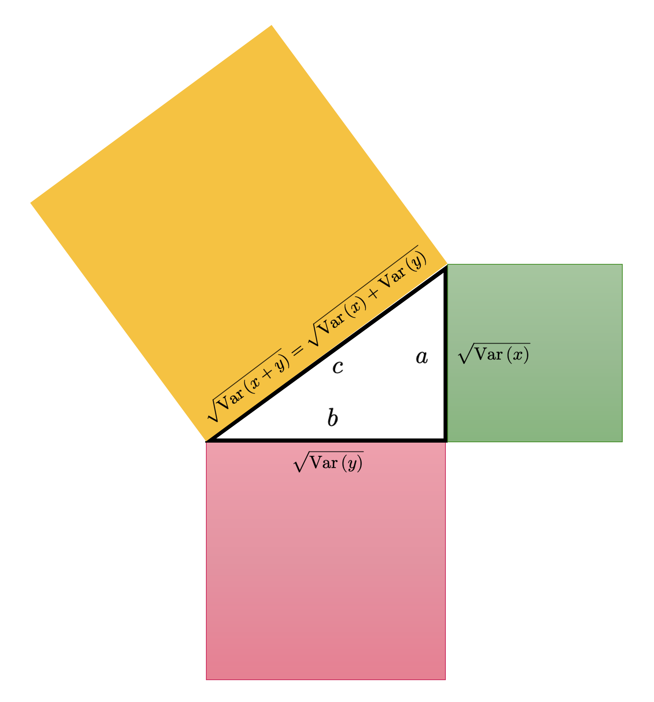
Si bien podríamos vernos tentados a utilizar normas Euclidianas (y, por extensión, distancias Euclidianas) construidas a partir del producto interno definido previamente a fin de comparar distribuciones de probabilidad, desafortunadamente no es la mejor opción para obtener métricas entre distribuciones. Recordemos que una función de densidad (o de masa) de probabilidad es siempre positiva y con un área total bajo su gráfica igual a 1. Estas restricciones significan que las distribuciones de probabilidad viven sobre objetos geométricos mucho más generales que espacios Euclídeos, y que de hecho se conocen como variedades. El estudio de estas variedades (que, insistimos, son objetos geométricos que resultan de un profunda abstracción de los conceptos propios de la geometría diferencial y el álgebra lineal) se conoce como geometría de la información. El cálculo de distancias entre distribuciones, con frecuencia, se realiza mediante el uso pseudo-métricas (que suelen violar alguno de los postulados de las métricas estrictas, muy comúnmente el que sean definidas positivas), tales como la divergencia de Kullback-Leibler, y que es propia de la famosa teoría matemática de la información de Shannon, aunque, por el momento, no nos adentraremos en dicho terreno.
4.12 Comentarios finales
Con este apunte hemos dado un paso decisivo en la transición desde la probabilidad entendida como una medida sobre eventos hacia la probabilidad entendida como una teoría sobre cantidades observables. Ese paso no es menor. Introducir variables aleatorias significa pasar desde la descripción abstracta de resultados inciertos a un lenguaje capaz de representar numéricamente fenómenos reales, medirlos, resumirlos y compararlos. En ese sentido, este apunte marca el punto exacto donde la teoría de probabilidad comienza a volverse verdaderamente operativa.
Las funciones de distribución, las funciones de masa y las funciones de densidad nos mostraron que la incertidumbre puede adoptar formas geométricas y analíticas muy distintas. Con frecuencia, la probabilidad se concentra en unos pocos puntos; otras veces se distribuye continuamente sobre intervalos completos. Esta distinción entre lo discreto y lo continuo no es sólo técnica, sino que determina la forma en que calculamos probabilidades, el tipo de herramientas matemáticas que utilizamos y la manera en que interpretamos los datos. El paso desde sumas a integrales, y desde masas puntuales a densidades, es uno de los cambios conceptuales más importantes de toda la teoría.
Por otra parte, el valor esperado y la varianza nos permitieron entender que una distribución no sólo asigna probabilidades, sino que también posee una estructura resumible. El valor esperado captura una noción de localización o tendencia central, mientras que la varianza cuantifica dispersión. Juntos, estos dos conceptos empiezan a revelar que las distribuciones pueden compararse no sólo por su forma completa, sino también por medio de ciertos parámetros que condensan parte importante de su comportamiento. Esta idea será crucial más adelante, cuando trabajemos con familias distribucionales específicas y con modelos estadísticos que dependen de pocos parámetros bien interpretados.
El estudio de distribuciones conjuntas, marginales y condicionales mostró además que la probabilidad adquiere su verdadero poder cuando dejamos de mirar variables aisladas y comenzamos a estudiar relaciones entre ellas. Allí aparecen conceptos esenciales como dependencia, independencia y condicionamiento, todos fundamentales en inferencia, predicción y modelamiento estadístico. En particular, la fórmula de Bayes deja ver con claridad que aprender desde la evidencia no es algo meramente metafórico, sino una operación matemática precisa, que permite actualizar una distribución cuando disponemos de nueva información. Esa idea, que parece sencilla, está en la base de una enorme parte de la estadística moderna y del aprendizaje automático en un contexto probabilístico.
Desde una perspectiva más amplia, este apunte también deja instalado un principio metodológico importante. Y es que, en problemas reales, no basta con decir que algo es incierto. Lo verdaderamente valioso es poder representar esa incertidumbre, cuantificarla y propagarla a través de cálculos, transformaciones y decisiones. Esa es, en el fondo, la razón por la cual las variables aleatorias son tan centrales en ciencia de datos, estadística e inteligencia artificial. No sólo describen azar, sino que permiten trabajar rigurosamente con él.
A partir de este punto, ya contamos con el lenguaje básico necesario para estudiar fenómenos aleatorios desde una perspectiva cuantitativa y estructurada. Sabemos qué es una variable aleatoria, cómo se describe por medio de distribuciones, cómo se resume mediante momentos elementales y cómo se relaciona con otras variables a través de distribuciones conjuntas y condicionales. Con ello, la teoría de probabilidad deja de ser únicamente una teoría de eventos y pasa a convertirse en una teoría de modelos numéricos bajo incertidumbre.
Esto prepara de manera natural el siguiente paso de nuestro aprendizaje, que corresponde al estudio de distribuciones específicas y de resultados generales que explican por qué ciertas distribuciones aparecen una y otra vez en aplicaciones reales. Allí entraremos a herramientas de enorme relevancia, como la desigualdad de Chebyshev, la ley de los grandes números, el teorema del límite central y las familias exponenciales, que permitirán entender no sólo cómo se comporta una variable aleatoria particular, sino también por qué ciertas regularidades probabilísticas emergen de manera universal. En otras palabras, el próximo apunte nos moverá desde la construcción del lenguaje hacia el reconocimiento de sus grandes patrones estructurales.